രാത്രി മുഴുവൻ പുറം കടലിിൽ നങ്കൂരമിിട്ട് കിിടന്നതിിനുശേഷം, അടുത്ത ദിിവസം കപ്പിത്താിത്താൻ വീണ്ും
രാത്രി മുഴുവൻ പുറം കടലിിൽ നങ്കൂരമിിട്ട് കിിടന്നതിിനുശേഷം, അടുത്ത ദിിവസം കപ്പിത്താിത്താൻ വീണ്ും
കപ്പൽ തീരത്തേക്കടുപ്പിിച്ു, എന്നാൽ പശ്ചിിമഘട്ടമലനിിരകൾ മേഘങ്ങളാൽ പൊ�ൊതിിഞ്ഞിിരുന്നു.
കപ്പൽ തീരത്തേക്കടുപ്പിിച്ു, എന്നാൽ പശ്ചിിമഘട്ടമലനിിരകൾ മേഘങ്ങളാൽ പൊ�ൊതിിഞ്ഞിിരുന്നു.
കനത്ത മഴയുമുണ്ായിിരുന്നു. അതിിനാൽ നാവിികർക്ക്് പ്രദേശം തിിരിച്ചറിിയാൻ കഴിിഞ്ഞിില്ല. എന്നിിരു
കനത്ത മഴയുമുണ്ായിിരുന്നു. അതിിനാൽ നാവിികർക്ക്് പ്രദേശം തിിരിച്ചറിിയാൻ കഴിിഞ്ഞിില്ല. എന്നിിരു
ന്നാലും, പിറ്റേദിിവസം മെയ്്
ന്നാലും, പിറ്റേദിിവസം മെയ്് 20
20-ന്് ഫോോർമോ�ോസ കുന്നുകൾ കടന്നപ്്പപോൾ മുതൽക്കെ, വാസ്ക
കോഡ
-ന്് ഫോോർമോ�ോസ കുന്നുകൾ കടന്നപ്്പപോൾ മുതൽക്കെ, വാസ്ക
കോഡ
ഗാമ കോ�ോഴിക്്കകോട്് നഗരത്തിിന്് പിന്നിിലായിി ഒരു മതിിലുപോ�ോലെ ഉയർന്നുകാണപ്പെട്ടിിരുന്ന പർവത
ഗാമ കോ�ോഴിക്്കകോട്് നഗരത്തിിന്് പിന്നിിലായിി ഒരു മതിിലുപോ�ോലെ ഉയർന്നുകാണപ്പെട്ടിിരുന്ന പർവത
ങ്ങളെ ശ്രദ്ധിിച്ചിിരുന്നു. ഒടുവിിൽ അന്നേദിിവസം വൈകുന്നേരത്്തതോടെ ഗാമയുടെ ആ ചെറുകൂൂട്ം
ങ്ങളെ ശ്രദ്ധിിച്ചിിരുന്നു. ഒടുവിിൽ അന്നേദിിവസം വൈകുന്നേരത്്തതോടെ ഗാമയുടെ ആ ചെറുകൂൂട്ം
പായ്ക്കപ്പലുകൾ കാപ്ാട്് എന്ന കുഞ്ുപട്ടണത്തിന്റെ തീരത്തുനിന്്നുുംും ഏകദേശം
പായ്ക്കപ്പലുകൾ കാപ്ാട്് എന്ന കുഞ്ുപട്ടണത്തിന്റെ തീരത്തുനിന്്നുുംും ഏകദേശം 5 മൈലുകൾ മാറിി
മൈലുകൾ മാറിി
നങ്കൂരമിിട്ു. ഗാമയും കൂട്ടരും കാണാൻ ഏറെ ആഗ്രഹിിച്ചിിരുന്ന കോ�ോഴിക്്കകോട്് നഗരത്തിിൽ നിന്്നുുംും
നങ്കൂരമിിട്ു. ഗാമയും കൂട്ടരും കാണാൻ ഏറെ ആഗ്രഹിിച്ചിിരുന്ന കോ�ോഴിക്്കകോട്് നഗരത്തിിൽ നിന്്നുുംും
വെറും
വെറും 7 മൈലുകൾ വടക്ക്് മാറിിയാണ്് ഈ ചെറുപട്ടണം സ്ഥിിതിചെയ്ുന്നത്്.
മൈലുകൾ വടക്ക്് മാറിിയാണ്് ഈ ചെറുപട്ടണം സ്ഥിിതിചെയ്ുന്നത്്.
താമസിിയാതെ, ഗാമ ആ നഗരത്തിിന്് തൊ�ൊട്ുമുന്നിിലായിി നങ്കൂരമിിട്ട് നിിലയുറപ്പിിച്ു, എന്നാൽ സുരക്ാ
താമസിിയാതെ, ഗാമ ആ നഗരത്തിിന്് തൊ�ൊട്ുമുന്നിിലായിി നങ്കൂരമിിട്ട് നിിലയുറപ്പിിച്ു, എന്നാൽ സുരക്ാ
കാരണങ്ങളാൽ മെയ്്
കാരണങ്ങളാൽ മെയ്് 27-
27-ന്് സാമൂൂതിിരിിയുടെ നാവിികൻ അദ്ദേഹത്തെ പന്തലായിിനിിയിലേക്ക്്
ന്് സാമൂൂതിിരിിയുടെ നാവിികൻ അദ്ദേഹത്തെ പന്തലായിിനിിയിലേക്ക്്
നയിിച്ു. അങ്ങനെ ഏകദേശം
നയിിച്ു. അങ്ങനെ ഏകദേശം 13
13 മൈലുകൾ വടക്കുമാറിി ഗാമ പന്തലായിിനിിയിിൽ നങ്കൂരമുറപ്പിിച്ു.
മൈലുകൾ വടക്കുമാറിി ഗാമ പന്തലായിിനിിയിിൽ നങ്കൂരമുറപ്പിിച്ു.
തുടർന്ന്് ആഗസ്റ്റ്്
തുടർന്ന്് ആഗസ്റ്റ്് 23
23 വരെ
വരെ 88
88 ദിിവസങ്ങളോ�ോളം അവരവിടെ തങ്ങിി. ആഗസ്റ്റ്്
ദിിവസങ്ങളോ�ോളം അവരവിടെ തങ്ങിി. ആഗസ്റ്റ്് 23
23 ന്് ഗാമയും കൂട്ടരും
ന്് ഗാമയും കൂട്ടരും
ഒരിിക്കൽക്കൂടിി തങ്ങളുടെ സ്ാനം മാറ്റിി, കോ�ോഴിക്്കകോട്് തുറമുഖത്ത്് നിന്്നുുംും ഏകദേശം
ഒരിിക്കൽക്കൂടിി തങ്ങളുടെ സ്ാനം മാറ്റിി, കോ�ോഴിക്്കകോട്് തുറമുഖത്ത്് നിന്്നുുംും ഏകദേശം 12
12 മൈലുകൾ
മൈലുകൾ
മാറിി കാറ്റിന്റെ ശല്യമില്ലാില്ലാത്ത മറ്്ററൊരു ഭാഗത്തായിി നിിലയുറപ്പിിച്ു.
മാറിി കാറ്റിന്റെ ശല്യമില്ലാില്ലാത്ത മറ്്ററൊരു ഭാഗത്തായിി നിിലയുറപ്പിിച്ു.
ആ സമയം മുതൽ ഒടുവിിൽ തിിരികെപ്്പപോകുന്ന ദിിവസമായ ആഗസ്റ്റ്് മാസം
ആ സമയം മുതൽ ഒടുവിിൽ തിിരികെപ്്പപോകുന്ന ദിിവസമായ ആഗസ്റ്റ്് മാസം 30
30-ാം തീയതിി
-ാം തീയതിി
ഉച്ചവരെ, വാസ്ക
കോഡഗാമ കോ�ോഴിക്്കകോട്് നഗരത്തിിലൂടെ ചുറ്റിിനടന്ന്് കാഴ്ചകൾ കണ്ും, അന്തരീക്ഷ
ഉച്ചവരെ, വാസ്ക
കോഡഗാമ കോ�ോഴിക്്കകോട്് നഗരത്തിിലൂടെ ചുറ്റിിനടന്ന്് കാഴ്ചകൾ കണ്ും, അന്തരീക്ഷ
സ്ഥിിതിിിക്കനുസരിിച്ച്്് പുറംകടലിിിൽ നങ്കൂൂരമിിട്ട്്് കിിിടന്നുംം� തീരത്തടുത്തുംം� സാമൂൂതിിരിിയുമായിിി ബന്ധംം
സ്ഥിിതിിിക്കനുസരിിച്ച്്് പുറംകടലിിിൽ നങ്കൂൂരമിിട്ട്്് കിിിടന്നുംം� തീരത്തടുത്തുംം� സാമൂൂതിിരിിയുമായിിി ബന്ധംം
സ്ഥാപിിക്കേ�ണ്ടതിിന്റെ� ആവശ്യയയകത കണക്കിിലെ�ടു
ുത്ത്്് ഇടയ്ക്കിിിടക്ക്്് സാമൂൂതിിരിിയെ� സന്ദർശിിച്ചുംം�
സ്ഥാപിിക്കേ�ണ്ടതിിന്റെ� ആവശ്യയയകത കണക്കിിലെ�ടു
ുത്ത്്് ഇടയ്ക്കിിിടക്ക്്് സാമൂൂതിിരിിയെ� സന്ദർശിിച്ചുംം�
സമയം ചെ�ലവഴിിച്ചു. ആഗസ്റ്റ്്്
സമയം ചെ�ലവഴിിച്ചു. ആഗസ്റ്റ്്് 30
30 ന്്് ഉച്ചയ്ക്ക്്് ശേ�ഷം തീരത്തിിന്്് സമാന്തരമായിിി കടൽക്കാറ്റുകളെ�
ന്്് ഉച്ചയ്ക്ക്്് ശേ�ഷം തീരത്തിിന്്് സമാന്തരമായിിി കടൽക്കാറ്റുകളെ�
ആശ്രയിിച്ച്്് യാത്ര തുടങ്ങിിിയ ഗാമയുടെെ പായ്ക്കപ്പലുകളെ� ശക്തിിയാായിിി ആഞ്ഞടിിച്ച ഒരു ചുഴലിിക്കാറ്റ്്്
ആശ്രയിിച്ച്്് യാത്ര തുടങ്ങിിിയ ഗാമയുടെെ പായ്ക്കപ്പലുകളെ� ശക്തിിയാായിിി ആഞ്ഞടിിച്ച ഒരു ചുഴലിിക്കാറ്റ്്്
പുറംകടലിിലേ�ക്ക്്് കൊ�ൊണ്ടുപോ�ോയിിി.
(സ്വതന്ത്രപരിിഭാഷ)
പുറംകടലിിലേ�ക്ക്്് കൊ�ൊണ്ടുപോ�ോയിിി.
(സ്വതന്ത്രപരിിഭാഷ)
സമുുദ്രസഞ്ചാാരരേ�ഖകൾ ശേേഖരിച്ച്് പ്രസിദ്ധീീകരിക്കുുന്ന 'ഹാാക് ല്യൂൂറ്റ്് ' സൊ�ൊസൈൈറ്റിി (The Hakluyt
Society) തയ്യാാറാാക്കിയ 'എ ജേേzർണൽ ഓഫ്് ദിി ഫസ്റ്റ്് വോോയെ�ജ് ഓഫ്് വാസ്കോ�ോഡഗാാമ' എന്ന
അമൂൂല്യയവുംംc ഏറെെ പഴക്കംം ചെxന്നതുമായ പുസ്തകത്തിിൽ നിിന്നെ�ടുുത്ത ഒരു ഭാാഗത്തിിന്റെź മലയാാള
പരിഭാാഷയാണ് നിിങ്ങൾ വായിച്ചത്്. വാസ്കോǘോഡഗാാമയുുടെെ ഈ യാത്ര യൂൂറോ�ോപ്യയന്മാാർക്ക് മലബാാർ
തീരത്തേ�ക്ക്് ഒരു സമുുദ്രമാർഗംം നൽകിി. ഇതോ�ോടെെ കേ�രളമാകെ�യുംംc മലബാാർതീരംം പ്രത്യേ�േകിിച്ചുംംc
വലിിയ മാറ്റങ്ങൾക്ക് വിധേേ
യമായി. അതിമനോ�ോഹ
രവുംംc പ്രകൃതിവിഭവങ്ങളാൽ സമ്പന്നവുമായ
ഈ തീരങ്ങളിലൂൂടെെയു
ുള്ള യൂൂറോ�ോപ്യയന്മാാരുടെെ കടന്നുവരവോോടെെ ഇന്ത്യയയുടെെ ചരിത്രംം തന്നെ� മാറ്റി
എഴുതപ്പെƀട്ടുു. ലക്ഷദ്വീ�പുകളുടെെയുംംc ആൻഡമാൻ-നിിക്കോ�ോബാാർ ദ്വീ�പുകളുടെെയുംംc തീരങ്ങൾ
ഉൾപ്പെƀടെെ ഇന്ത്യയയ്ക്ക്് ഏകദേ�ശംം 7517 കിിലോ�ോമീീറ്റർ നീളത്തിിൽ തീരദേ�ശമുുണ്ട്്. ഭൂൂമിശാസ്ത്രപരവുംംc
ചരിത്രപരവുമായി ഏറെെ പ്രാധാന്യയമുുള്ള ഈ തീരദേ�ശങ്ങളുടെെ ഭൂൂമിശാസ്ത്രവൈൈവിധ്യയങ്ങളിലേ�ക്ക്്
നമുുക്കൊ�ൊന്ന്് കടന്നുചെxല്ലാംDZ.
തീരങ്ങളിലൂടെ
8
Page 67

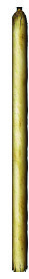

Page 68
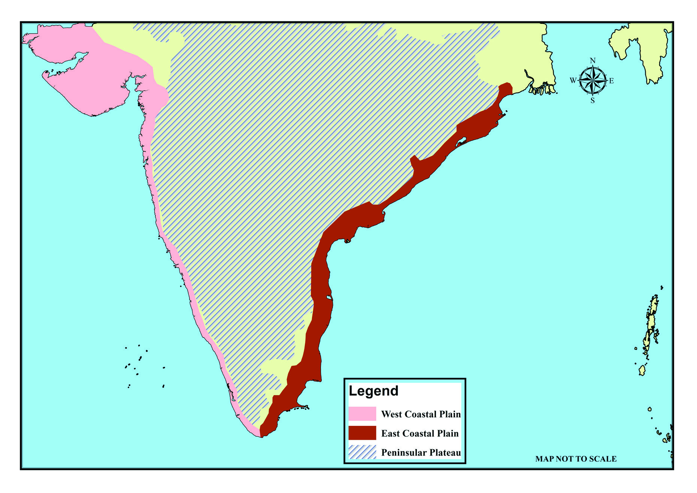


164
ഭാഗം II
സാമൂഹ്്യശാസ്തം II
ചിത്രം 8.1
അറബിക്കടൽ
അറബിക്കടൽ
പടിഞ്ഞാറൻ തീരസമതലംം
പടിഞ്ഞാറൻ തീരസമതലംം
ലക്ഷദ്്വീപ്
ലക്ഷദ്്വീപ്
ബംംഗാാൾ ഉൾക്കടൽ
ബംംഗാാൾ ഉൾക്കടൽ
കിഴക്കൻ
കിഴക്കൻ
ആൻഡമാാൻ നിക്്കകോബാാർ
ആൻഡമാാൻ നിക്്കകോബാാർ
ദ്്വീപുകൾ
ദ്്വീപുകൾ
ഉപദ്്വീപീയപീഠഭൂമി
ഉപദ്്വീപീയപീഠഭൂമി
തീരസമതലംം
തീരസമതലംം
പടിഞ്ഞാറൻ തീരസമതലംം
കിഴക്കൻ തീരസമതലംം
ഉപദ്്വീപീയപീഠഭൂമി
സൂചിക
ഇന്തത്യ്യയിലെ ഭൂൂപ്രകൃതി വിഭാാഗങ്ങളിലൊ�ൊന്നാായ തീീരസമതലം ഏറെ ജന
നിബിഡമാാണ്്. ജനവാാസത്ിന്് അനുയോ�ോജ്യമാായ ധാാരാാളം ഘടകങ്ങൾ
ഉള്ളതിനാാൽ തന്നെയാാണ്് ഈ മേഖല ജനനിബിഡമാാകുന്നത്്. അവ
ഏതെല്ലാമെന്ന്്
എഴുതിനോ�ോക്കൂൂ.
സമതലഭൂൂപ്രകൃതി
അനുയോ�ോജ്യമാായ കാലാാ
വസ്ഥ
ജലലഭ്്യത
സ്ഥാാനം, ഭൂൂപ്രകൃതി സവിശേഷതകൾ എന്നിവയുടെ അടിസ്ഥാാനത്ിൽ
ഇന്തത്യ്യൻ തീീരസമതലത്തെ
രണ്ടാായി തിരിക്്കാാംാം.
ഭൂൂപടം (8.1) നിരീക്ഷിീക്ഷിച്ച് അവയുടെ സ്ഥാാനം തിരിച്ചറിഞ്ഞ്് പട്ടികപ്പെടുത്തൂൂ.
പടിഞ്ഞാാറൻ തീീരസമതലം
ഇന്തത്യ്യയുടെ ഭൂൂപടരൂൂപരേഖയിൽ തീീരസമതലങ്ങൾ ചിത്രീീകരിച്ച് എന്റെ
ഭൂൂപടശേഖരത്ിൽ ഉൾപ്പെടുത്തൂൂ.
ഇന്തത്യ - തീരസമതലങ്ങൾ
ഇന്തത്യ - തീരസമതലങ്ങൾ
Page 69


165
തീരങ്ങളിലൂടെ
സ്റ്റാൻഡേർഡ് IX
പടിഞ്ഞാറൻ തീരത്ത് നദീനിക്ഷേപങ്ങൾ കുറവാായിരിക്ുും. കാാരണങ്ങൾ
അന്്വേഷിച്ചറിയൂ.
ഭൂപടംം (ചിത്രംം 8.2) നിരീക്ഷിച്ച്് പടിഞ്ഞാറൻ തീരസമതലത്ിന്റെ മൂന്ന്് വിഭാാഗ
ങ്ങൾ തിരിച്ചറിഞ്ഞ്് ഇന്തത്യയുടെ രൂപരേഖയിൽ ചിത്ീകരിക്ൂ. എന്റെ
ഭൂപടശേഖരത്ിൽ ഉൾപ്്പെടുത്ൂ.
പടിഞ്ഞാറൻ തീരസമതലത്ിന്റെ മറ്്ററൊരു സവിശേഷതയാാണ്് തീരത്്തതോട
ടുത്ത് കാാണപ്്പെടുന്ന കാായലുകൾ.
പടിഞ്ഞാറൻ തീരസമതലത്തെ മൂന്ന്് ഭാാഗങ്ങളാായി തിരിക്്കാാംം.
ഗുജറാാത്ത് തീരംം
കൊ�ൊങ്കൺ തീരംം
മലബാാർ തീരംം
തീരപ്രദേ�ശങ്ങളിൽ ഉത്ഥാാനംംം (Upliftment) പോ�ോലുുള്ള
ഭൗമപ്രവർത്തനത്താാാൽ തീരദേ�ശത്തെ� കരഭാാഗംംം ഉയരു
കയോ�ോ സമുദ്രനിരപ്പ്്് താാാഴുുകയോ�ോ ചെ�യ്യുുന്നു. ഇതിന്റെ�
ഫലമാായി
കടൽ
പിൻവാാങ്ങി
രൂപപ്പെ�ടുന്ന
തീര
ങ്ങളാാണ്് ഉയർത്തപ്്പെട്ട തീരങ്ങൾ (Emerged Coast).
അവതലനംംം
(Subsidence) പോ�ോലുുള്ള ഭൗമപ്രവർത്തന
ങ്ങൾ നടക്കുമ്പോƠോൾ തീരദേ�ശത്തെ� കരഭാാഗംംം താാാഴുുകയോ�ോ
സമുദ്രജലനിരപ്പ്്് ഉയരുകയോ�ോ ചെ�യ്യുുന്നു. ഇതിന്റെ� ഫല
മാായി കരയിലേ�ക്ക്്് കടൽ കയറി രൂപപ്പെ�ട്ട തീരങ്ങ
ളാാണ്് താഴ്്ത്ത
പ്്പെട്ട തീരങ്ങൾ (Submerged Coast).
താഴ്്ത്ത
പ്പെട്ട തീരവും ഉയർ്തപ്പെട്ട തീരവും
ഇന്തത്യയുടെ
തീരസമതലങ്ങളുടെ
സവിശേഷതകൾ എന്തെല്ലാമെന്ന്്
പരിശോ�ോധിക്്കാാംം.
പടിഞ്ാറൻ തീരസമതലം
ഭൂപടംം (ചിത്രംം 8.1) നിരീക്ഷിക്ൂ.
ഉപദ്്വവീപീയപീഠഭൂമിക്ുും
അറബി
ക്കടലിനുംം
ഇടയിൽ
സ്ിതി
ചെയ്യുന്ന
ഇടുങ്ങിയ
ഭൂപ്രദേശ
മാാണ്് പടിഞ്ഞാറൻ തീരസമതല
മെന്ന്് തിരിച്ചറിഞ്ഞില്ലേ. ഗുജറാാ
ത്തിലെ കച്ച്് മുതൽ കന്്യയാാകു
മാാരി വരെ ഏകദേശംം
1840 കിലോ�ോ
മീ്റർ നീളത്ിൽ കാാണപ്്പെടുന്ന ഈ തീരപ്രദേശത്ിന്റെ വീതി 10
കിലോ�ോമീ്ററിനുംം 15 കിലോ�ോമീ്ററിനുമിടയിലാാണ്്. ഇത്് ഒരു താഴ്്ത്ത
പ്്പെട്ട
തീരമാാണ്് (Submerged Coast).
Page 70
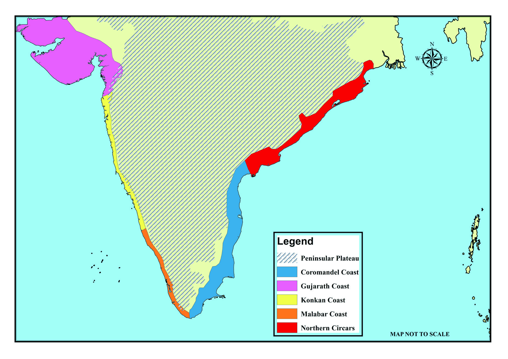

166
ഭാഗം II
സാമൂഹ്്യശാസ്തം II
ചിത്രം 8.2
അറബിക്കടൽ
അറബിക്കടൽ
ഗുജറാത്ത്ത
് തീരംം
ഗുജറാത്ത്ത
് തീരംം
ഉപദ്്വീപീയപീഠഭൂമി
ഉപദ്്വീപീയപീഠഭൂമി
കൊ�ൊങ്കൺ തീരംം
കൊ�ൊങ്കൺ തീരംം
ലക്ഷദ്്വീപ്
ലക്ഷദ്്വീപ്
മലബാാർ തീരംം
മലബാാർ തീരംം
ബംംഗാാൾ ഉൾക്കടൽ
ബംംഗാാൾ ഉൾക്കടൽ
കോ�ോറമാാന്റൽ
കോ�ോറമാാന്റൽ
വടക്കൻ സിർക്കാാർ തീരംം
വടക്കൻ സിർക്കാാർ തീരംം
ആൻഡമാാൻ
ആൻഡമാാൻ
നിക്്കകോബാാർ ദ്്വീപുകൾ
നിക്്കകോബാാർ ദ്്വീപുകൾ
തീരംം
തീരംം
ഉപദ്്വീപീയപീഠഭൂമി
കോ�ോറമാാന്റൽ തീരംം
ഗുജറാത്ത്ത
് തീരംം
കൊ�ൊങ്കൺ തീരംം
മലബാാർ തീരംം
വടക്കൻ സിർക്കാാർ തീരംം
സൂചിക
പടിഞ്ഞാാറൻ തീീരസമതലത്തിന്റെ മൂന്ന്് വിഭാാഗങ്ങൾ ഏതെല്ലാമെന്ന്്
കണ്ടെത്ിയല്്ലലോ. ഇനി നമുക്ക്് അവ ഓരോ�ോന്നിന്റെയും സവിശേഷതകൾ
ചർച്ച ചെയ്്യാാംാം.
ഗുജറാത്ത്ത
് തീരസമതലംം
റാാൻ ഓഫ്് കച്ച് ചതുപ്പ്് പ്രദേശവും കച്ച് സൗരാാഷ്ട്ര മേഖലകളുടെ
തീീരപ്രദേശങ്ങളും ദമൻ-ദിയു, ദാാദ്ര-നഗർഹവേലി കേന്ദ്രഭരണ പ്രദേശങ്ങളും
ഉൾപ്പെടുന്നതാാണ്് ഗുജറാാത്ത്് തീീരസമതലം. സബർമതി, മാാഹി തുടങ്ങിങ്ങിയ
നദികളുടെ എക്കൽ നിക്ഷേപണ ഫലമാായാാണ്് ഈ തീീരസമതലഭാാഗം
രൂൂപപ്പെട്ടിട്ടുള്ളത്്. ചെറുതും വലുതുമാായ ദ്്വവീീപുകൾ, ഉപദ്്വവീീപുകൾ,
കടലിടുക്ുകൾ, ചതുപ്പുനിലങ്ങൾ, വേലിയേറ്റ ചാലുകൾ
(Creeks),
കുന്നുകൾ തുടങ്ങിങ്ങിയവ ഈ മേഖലയുടെ പ്രധാാന സവിശേഷതകളാാണ്്.
ഇന്തത്യ - തീരപ്രദേശങ്ങൾ
ഇന്തത്യ - തീരപ്രദേശങ്ങൾ
Page 71

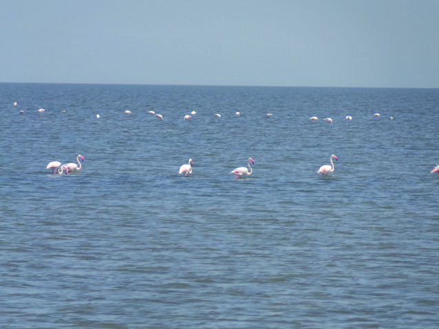


167
തീരങ്ങളിലൂടെ
സ്റ്റാൻഡേർഡ് IX
ഇന്തത്യ്യ പാാക്ക്് അതിർത്ി പ്രദേശമാായ കച്ചിലെ ഒരു
ലവണ ചതുപ്പുനിലമാാണ്് റാാൻ ഓഫ്് കച്ച്. ഗുജറാാത്ി
ഭാാഷയിൽ
‘റാാൻ’
എന്നാാൽ
മരുഭൂൂമി
എന്നാാണർഥം.
മഴക്കാാലങ്ങളിൽ
വെ�ള്ളക്കെ�ട്ടുുകളാായി
രൂൂൂപപ്പെƀടുന്ന
ഇവ
മഴ
മാാറുന്നതോ�ോടെെ
വരണ്ട
ലവണമരുഭൂൂമി
പ്രദേ�ശമാായിി മാാറുന്നു. വെ�ളുത്ത ഉപ്പുമണൽ നിറഞ്ഞ
റാാാൻ ഓഫ്്് കച്ച്് ഒരു ലവണമരുഭൂൂമിയാാണ്്്. ഏക
ദേ�ശംം 26000 ചതുരശ്ര കിലോ�ോമീീറ്റർ വിസ്തൃതിയുളള ഈ
ചതുപ്പുനിലത്തിന്്് ഗ്രേ÷റ്റർ റാാാൻ, ലിറ്റിൽ റാാാൻ എന്നിങ്ങനെ�
രണ്ട്്് ഭാാാഗങ്ങളുണ്ട്്്. നവംബർ മുതൽ ഫെ�ബ്രുുവരി വരെെ
നീീണ്ടുനിൽക്കുന്ന റാാാൻ ഉത്സവം ഇവിടത്തെ� പ്രധാാാന
ആഘോ�ോഷമാാണ്്്.
റാാൻ ഓഫ് കച്്
റാാൻ ഓഫ് കച്് - ലവണ ചതുപ്പുനിലംം
കപ്പലുകളുടെ ശവപ്പറമ്പ്് (Graveyard of ships)
എന്നറിയപ്പെടുന്ന അലാാങ്് കടൽത്തീീരവും
പരുത്ിത്ുണി വ്യവസാായ കേന്ദ്രങ്ങളാായ
സൂൂൂറത്തുംം�
വഡോ�ോദരയുംം�
മത്സ്യയബന്ധന
ഹാാാർബറാാായ വെ�രാാാവലുംം� ചരിത്ര പ്രാാധാാന്യയമുുള്ള
ദണ്ഡിികടപ്പുറവുംം� നിരവധിയാാായ ഉപ്പുപാാട
ങ്ങളുമെെല്ലാംDZ ഗുജറാാത്ത്്് തീീീരസമതലത്തിലെ�
ജനജീീവിതത്തിന്റെ� അടയാാാളപ്പെƀടുത്തലുകളാാണ്്്.
മുകളിൽ സൂചിപ്പിച്ചിട്ടുള്ള പ്രദേശങ്ങളുടെ ചിത്രങ്ങൾ വിവരസാങ്കേതിക
വിദ്്യയുടെ സഹാായത്്തതോടെ ശേഖരിച്ച് ഒരു ഡിജിറ്റൽ ആൽബം തയ്യാാറാാ
ക്ുക.
കൊ�ൊങ്കൺതീരംം
ഗുജറാാത്ത്് തീീരസമതലത്ിന്് തെക്ക്് ദമൻ മുതൽ ഗോ�ോവ വരെ
വ്യയാാപിച്ിരിക്ുന്ന തീീരസമതലമാാണ്് കൊ�ൊങ്കൺതീീരം. ഏകദേശം 500
കിലോ�ോമീറ്ററാാണ്് ഇതിന്റെ നീീളം. പശ്ിമഘട്ടമലനിരകൾ ഈ തീീരത്ിന്്
സമാന്തരമാായി സ്ഥിതി ചെയ്ുന്നതിനാാൽ ഇവിടെ തീീരസമതലം ഇടുങ്ങിയ
താാണ്്. കൊ�ൊങ്കൺ തീീരത്തിന്റെ വടക്ുഭാാഗം മണൽ നിറഞ്ഞ തീീരങ്ങളും
ചിത്രം 8.3
അലാാങ് തീരത്തെ കപ്പൽപൊ�ൊളിക്കൽ കേന്ദരം
Page 72


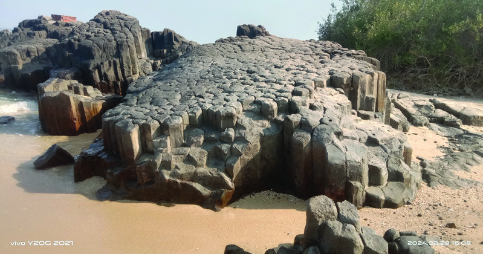


168
ഭാഗം II
സാമൂഹ്്യശാസ്തം II
കൊ�ൊങ്കൺതീീരത്തെ
പ്രധാാന തുറമുഖ
ങ്ങൾ കണ്ടെത്ി
എന്റെ ഭൂൂപട
ശേഖരത്ിൽ
ഉൾപ്പെടുത്തൂൂ.
സെന്റ്ന്റ് മേരീസ് ദ്്വീപിലെ
കൽ്തൂണുകൾ
കർണ്ണാടകയിലെ ഉഡുപ്പി ജില്ലയിൽ മാാൽപെ തീീരത്ത്്
നിന്്നുുംും മാാറി കടലിലാായി സ്ഥിതിചെയ്ുന്ന ജനവാാസമി
ല്ലാത്ത
ചെറുദ്്വവീീപാാണ്് സെന്റ്് മേരീീസ്് ദ്്വവീീപ്്. ദ്്വവീീപ്് നിറയെ
ഷഡ്്ഭുജം (Hexagon) ആകൃതിയിലുള്ള കൽത്തൂൂണുകൾ
പോ�ോലുള്ള പാാറക്കൂട്ടങ്ങളാാണ്്. ഏകദേശം 88 ദശലക്ഷം
ക്ഷം
വർഷങ്ങൾക്ക്് മുമ്പ്് സംഭവിച്ച അഗ്ിപർവത സ്ഫ
ഫോടനത്ി
ലൂടെ പുറത്ുവന്ന ലാാവ തണുത്ത്് രൂൂപപ്പെട്ടവയാാണ്് ഇവ.
Columnar joints എന്ന ജിയോ�ോളജീീയ ശിലാാമാാതൃകയാാണിത്്.
ഇതൊ�ൊരു പ്രധാാന വിനോ�ോദസഞ്ചാരകേന്ദ്രംന്ദ്രം കൂടിയാാണ്്.
ഷഡ്ഭുജശിലകൾ (Hexagonal Rocks)
എന്തുകൊ�ൊണ്ടാാ
ണ്് കൊ�ൊങ്കൺതീീരസമതലത്ിൽ ഉയർന്ന തോ�ോതിൽ മഴ
ലഭിക്ുന്നത്്?
മലബാാർ തീരംം
മംഗലാാപുരം മുതൽ കന്യയാാകുമാാരി വരെ വ്യയാാപിച്ിരിക്ുന്ന മലബാാർ
തീീരത്ിന്് ഏകദേശം 580 കിലോ�ോമീറ്റർ ദൈർഘ്യമാാണുള്ളത്്. കൊ�ൊങ്കൺ
തീീരത്തേക്കാാൾ വീീതി കൂടുതലാാണ്് ഈ തീീരത്ിന്്. ക്ിഫുകൾ, കടൽ
(Sandy
Coast) തെക്ുഭാാഗം
പാാറക്കൂട്ടങ്ങൾ
നിറഞ്ഞ തീീരവുമാാണ്് (Rocky Coast). ക്ിഫുകൾ,
ദ്്വവീീപുകൾ, ബീീച്ുകൾ തുടങ്ങിങ്ങിയ തീീരദേശ
ഭൂൂരൂൂപങ്ങൾ ഇവിടെ കാാണപ്പെടുന്നു. ഇന്തത്യ്യയിലെ
പ്രധാാന
വിനോ�ോദസഞ്ചാരകേന്ദ്രമാായ
ഗോ�ോവ
യിൽ ധാാരാാളം ബീീച്ുകളുണ്ട്.
ധാാരാാളം മഴ ലഭിക്ുന്ന ആർദ്രകാലാാ
വസ്ഥ
കൊ�ൊങ്കൺ തീീരസമതലത്തെ
ജൈവവൈവിധ്യ
സമ്പന്നമാാക്ുന്നു.
നവഷേവ (നവിമുംബൈ), മോ�ോർമു
ഗാവോ�ോ തുടങ്ങിങ്ങി പ്രകൃതിദത്ത
തുറ
മുഖങ്ങളും മാാൽപെ മത്സ്യബന്ധന
ഹാാർബറും കപ്പൽ നിർമ്മാാണശാല
കളും ടൂൂറിസം കേന്ദ്രങ്ങളും വ്യവ
സാായ കേന്ദ്രങ്ങളുമെല്്ലാാംാം കൊ�ൊങ്കൺ
തീീരത്തെ സാാമ്പത്ിക പ്രവർത്ത
നങ്ങളാാൽ സക്ിയമാായ ഒരു മേഖല
യാാക്ി മാാറ്ുന്നു.
ചിത്രം 8.4
രത്നഗിരി തീരത്തെ ക്ിഫ്
Page 73
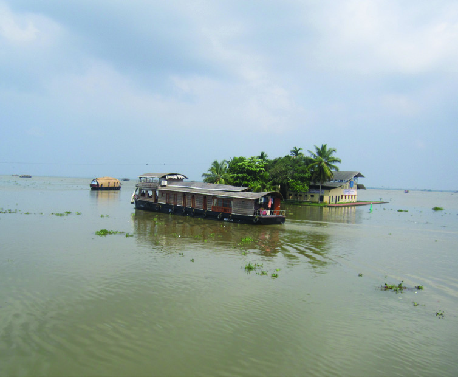


169
തീരങ്ങളിലൂടെ
സ്റ്റാൻഡേർഡ് IX
ചിത്രം 8.5
വേമ്പനാട്ടുാട്ടുകാായൽ
വിവരസാങ്കേതികവിദ്്യയുടെ സഹാായത്്തതോടെ കേരളത്തിലെ പ്രധാാന
ബീീച്ുകളുടെ ചിത്രങ്ങൾ ശേഖരിച്ച് ഒരു ഡിജിറ്റൽ ആൽബം തയ്യാാറാാക്കൂൂ.
സ്തംഭങ്ങൾ, ബീീച്ചുകൾ, അഴിമുഖങ്ങൾ, പൊ�ൊഴിി
കൾ തുടങ്ങി നിരവധി തീീീരഭൂൂരൂൂൂപങ്ങൾ
മലബാാാ
ർതീീീരത്തുംം� കാാണാംം. ഇവിടത്തെ� മറ്റൊ�ൊരു
സവിശേ�ഷതയാാണ്്് കാാായലുകൾ. വേ�മ്പനാാാട്ടുു
കാാായൽ ഇതിൽ പ്രധാാാനമാാണ്്്. ഇവിടെെ കാാായ
ലുകളും�ം തടാാാകങ്ങളും�ം കനാാലുകൾ വഴി
ബന്ധിപ്പിച്ച്് ജലഗതാാാഗതം സാാധ്യയമാാക്കുന്നു.
കോ�ോട്ടപ്പുറം മുതൽ കൊ�ൊല്ലംം വരെെ ഇത്തരത്തിൽ
ഗതാാാഗതയോ�ോഗ്യയമാാണ്്്. ഇന്ത്യയയിിലെ� പ്രധാാാന
ദേ�ശീീീ
യജലപാാാതകളിലൊ�ൊന്നാാണി
ിത്്് (NW 3).
വർക്കല, ഏഴിമല, ബേ�ക്കൽ തുടങ്ങിയ
പ്രദേ�ശങ്ങളിൽ
തീീീരങ്ങൾ
ഉയർന്ന്്്
കാാാണപ്പെƀടുന്നു. ഇവിടെെ ക്ലിഫ്്് പോ�ോലുുള്ള ഭൂൂരൂൂൂപങ്ങളും�ം കാാണാംം.
മുഴുപ്പിലങ്ങാാട്്്, ചാാാവക്കാാട്്്, കോ�ോവളം തുടങ്ങിയ ബീീച്ചുകൾ ധാാരാാളം
വിനോ�ോദസഞ്ചാാരിികളെ� ആകർഷിക്കുന്നവയാാണ്്്. ഭൂൂൂപടം നിരീീക്ഷിച്ച്്
മലബാാാ
ർതീീീരത്തെ� പ്രധാാാന ബീീച്ചുകളുടെെ സ്ഥാാനംം കണ്ടെ�ത്തൂൂൂ.
പൊ�ൊതുുവെ� തീീീരദേ�ശത്തെ� തണ്ണീീീർത്തടങ്ങളും�ം കാാായലുകളും�ം ദേ�ശാാടന
പക്ഷികളുടെെ പ്രജനന കേ�ന്ദ്രങ്ങളാാണ്്്. കടലുുണ്ടി, കുമരകം, പാാതിരാാാമണൽ
തുടങ്ങിയ പക്ഷിസങ്കേ�തങ്ങൾ ദേ�ശാാടന പക്ഷികൾക്ക്്് സംരക്ഷണം
നൽകുന്ന ഇടങ്ങളാാണ്്്.
നാാഞ്ചിനാാടും�ം കുട്ടനാാടും�ം കോ�ോൾനിലങ്ങളും�ം അടങ്ങുന്ന നെ�ല്ലറകളും�ം
നീീണ്ടകര,
മുനമ്പം,
പൊ�ൊന്നാാനിി,
ബേ�പ്പൂൂൂർ
തുടങ്ങിയ
മത്സ്യയ
ബന്ധന ഹാാർബറുകളും തീീരദേശജ
നതയുടെ സാാമ്പത്ിക പ്രവർത്തന
കേന്ദ്രങ്ങളാാണ്്.
പടിഞ്ഞാാറൻ തീീരസമതലത്തിന്റെ സ്ഥാാനം, വ്യയാാപ്ി, ഉപവിഭാാഗങ്ങൾ,
ഭൂൂമിശാാസ്ത്ര സവിശേഷതകൾ എന്നിവയെല്്ലാാംാം ചർച്ച ചെയ്തല്്ലലോ. ഇനി
നമുക്ക്് കിഴക്കൻ തീീരസമതലത്തിന്റെ സവിശേഷതകൾ എന്തെല്ലാമെന്ന്്
പരിശോ�ോധിക്്കാാംാം.
Page 74

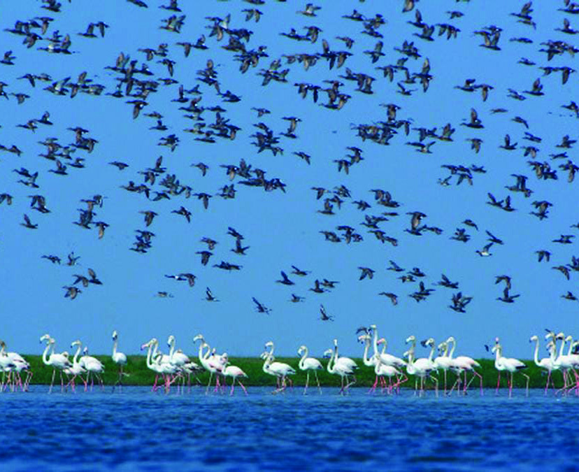


170
ഭാഗം II
സാമൂഹ്്യശാസ്തം II
ഭൂപടം 8.2 നിരീക്ിച്ച് കിഴക്കൻ തീരസമതലത്ിന്റെ രണ്ട്് വിഭാഗങ്ങൾ
ഏതെല്ലാമെന്ന്് കണ്ടെത്ി പട്ികപ്്പെടുത്ൂ. അവയുടെ സ്ാനം തിരിച്ച
റിഞ്ഞ്് എന്റെ ഭൂപടശേഖരത്ിൽ ഉൾപ്്പെടുത്ൂ.
വടക്കൻ സിർക്കാർ തീരം
മഹാനദി ഡൽറ്റ മുതൽ കൃഷ്ണ ഡൽറ്റ വരെ വ്യാപിച്ിരിക്കുന്ന തീരസമ
തലഭാഗമാണ്് വടക്കൻ സിർക്കാർ തീരം. ഒഡിഷ, ആന്ധാപ്രദേശ്് എന്ീ
സംസ്ാനങ്ങളുടെ തീരദേശം ഇതിൽ ഉൾപ്്പെടുന്ു. ഒഡിഷയിൽ
ഇത്് ഉത്്കൽ സമതലം എന്ും ആന്ധാപ്രദേശിൽ ആന്ധാസമതലം
എന്ുമാണ്് അറിയപ്്പെടുന്നത്്. മുഖ്യമായും മഹാനദി, ഗോ�ോദാവരി, കൃഷ്ണ
എന്ീ
നദികളുടെ
ഡൽറ്റാനിക്ഷേപങ്ങൾ
ഉൾപ്്പെട്ടതാണ്് ഈ സമതലഭാഗം. മഹാനദി
ഡൽറ്റയ്ക്ക്് തെക്കാക്കായി സ്ിതിചെയ്യുന്ന ചിൽക്ക
തടാകം ഇന്ത്യയിലെ വലിയ തടാകങ്ങളിലൊ�ൊ
ന്ാണ്്. ആന്ധ്രയിലെ കൊ�ൊല്ലേരു തടാകമാണ്്
കിഴക്കൻതീരത്തെ മറ്്ററൊരു പ്രധാന തടാകം.
പശ്ിമതീരത്തെ
അപേക്ിച്ച്
കിഴക്കൻ
തീരത്ത്് തുറമുഖങ്ങൾ കുറവാണ്്. വിശാഖപട്ട
ണവും മസൂലിപട്ടണവുമാണ്് പ്രധാന തുറമുഖ
ങ്ങൾ.
ശ്രീീകാകുളം, ഈസ്റ്റ്്് ഗോ�ോദാവരി, വെ�സ്റ്റ്്്
ഗോ�ോദാവരി
തുടങ്ങിയ
നെ�ല്ലറകളും�ം
വിശാഖപട്ടണം, മസൂലിപട്ടണം തുടങ്ങിയ
മത്സ്യയയബന്ധന തുറമുഖങ്ങളും�ം തീീരജനതയുടെെ സാാമ്പത്തിിക
പ്രവർത്തനങ്ങളുടെെ കേ�ന്ദ്രങ്ങളായി നിലകൊ�ൊള്ളുുന്നു.
ചിത്ം 8.6
ചിൽക്ക തടാാകം
കിഴക്കൻ തീരങ്ങളിൽ തുറമുഖങ്ങൾ കുറവാണ്് കാരണം എന്തായിരിക്്കുുംും?
കിഴക്കൻ തീരസമതലംം
പൂർവഘട്ടത്തിനുംം� ബംഗാൾ ഉൾക്കടലിനുംം� മധ്യേ�േ സ്ഥിതിചെ�യ്യുന്ന
താരതമ്യേ�േന വീതികൂടിയ തീരസമതലമാണ്്് കിഴക്കൻ തീരസമതലമെെന്ന്്്
തിരിച്ചറിഞ്ഞില്ലേ�. മഹാനദി ഡൽറ്റാപ്രദേ�ശം മുതൽ കന്യാാ�കുുമാരി വരെെ
ഏകദേ�ശം 1800 കിലോ�ോമീറ്റർ നീളമുള്ള കിഴക്കൻ തീരസമതലം മഹാനദി,
കൃഷ്ണ, ഗോ�ോദാവരി, കാവേ�രി തുടങ്ങിയ ഉപദ്വീ�പീയനദികളുടെെ നിക്ഷേ�
പണ പ്രക്ിയയുടെ ഫലമായി രൂപപ്്പെട്ടതാണ്്. ഇത്് ഒരു ഉയർത്തപ്്പെട്ട
(Emerged Coast) തീരമാണ്്. മഹാനദി, കൃഷ്ണ, ഗോ�ോദാവരി, കാവേരി
എന്ീ നദികളുടെ ഡൽറ്റകൾ ഉൾപ്്പെട്ടതാണ്് ഈ തീരസമതലം.
ഡൽറ്റകളെക്കുക്കുറിച്ും ഡൽറ്റ രൂപീകരണത്തെക്കുക്കുറിച്ും മുൻ അധ്യായ
ത്ിൽ ചർച്ച ചെയ്തത്് ഓർക്കുന്നില്ലേ?
Page 75
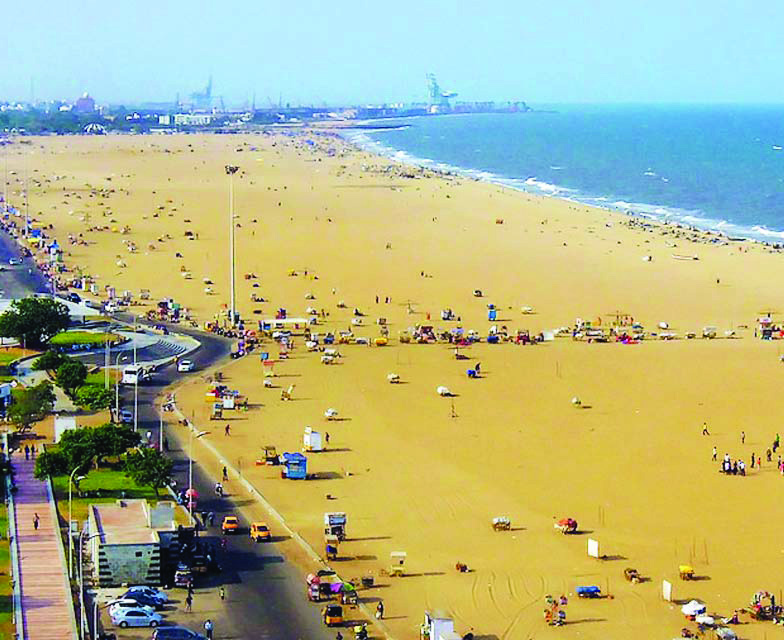


171
തീരങ്ങളിലൂടെ
സ്റ്റാൻഡേർഡ് IX
കോ�ോറമാാന്റൽ തീരംം
കൃഷ്ണാാാനദി ഡൽറ്റ മുതൽ കന്യാാ�കുുമാാരി വരെെ നീീളുന്ന തീീീരസമതലമാാണി
ിത്്്.
കാാവേ�രിനദി ഡൽറ്റയുംം� ഈ തീീീരസമതലത്തിന്റെ� ഭാാാഗമാാണ്്്. ഈ
പ്രദേ�ശങ്ങളിൽ കാാാണപ്പെƀടുന്ന ഫലഭൂൂയിിഷ്ഠമാാായ ഡൽറ്റാാാ എക്കൽമണ്ണ്്്
കോ�ോറമാാന്റൽ തീീീരസമതലത്തെ� നെ�ൽക്കൃഷിക്ക്്് അനുയോ�ോജ്യയമാാക്കുന്നു.
കോ�ോറമാാന്റൽ തീീീരത്തെ� ഒരു പ്രധാാാന തടാാാകമാാണ്്് പുലിക്കാാട്ട്്്തടാാകം.
പുലിക്കാാട്ട്്്തടാാാകത്തിന്റെ� തീീീരത്താാണ്്് ഇന്ത്യയയ
യുടെെ റോ�ോക്കറ്റ്്് വിക്ഷേ�പണ കേ�ന്ദ്രമാാായ
ശ്രീീീഹരിക്കോ�ോട്ട സ്ഥിതിചെ�യ്യുന്നത്്്. പുലി
ക്കാാട്ട്്്തടാാകം, പോ�ോയിന്റ്കാാലിമർ എന്നീീീ പക്ഷി
സങ്കേ�തങ്ങൾ, പിച്ചാാവരം കണ്ടൽക്കാാടുകൾ
തുടങ്ങിയവ ഈ തീീീരസമതലത്തിലെ� ജൈൈവ
വൈൈവിധ്യയയ സംരക്ഷണകേ�ന്ദ്രങ്ങളാാണ്്്.
ഇവിടത്തെ� പ്രധാാാന മത്സ്യയബന്ധന ഹാാാർബ
റുകളാാണ്്് നാാാഗപട്ടണം
ം, കടലൂൂൂർ എന്നിവ.
ചെ�ന്നൈൈ തീീീരത്തെ� മറീീീന ബീീച്ച്്് പ്രസിദ്ധമാാായ
വിനോ�ോദസഞ്ചാാര കേ�ന്ദ്രമാാണ്്്.
ചിത്രം 8.7
മറീന ബീച്് (ചെന്നൈ)
ഇന്തത്യ്യയുടെ തീീരദേശങ്ങളിലെ പ്രധാാന തുറമുഖങ്ങളുടെ സ്ഥാാനം അറ്റ്ല
സിന്റെ സഹാായത്്തതോടെ കണ്ടെത്ി എന്റെ ഭൂൂപടശേഖരത്ിൽ ഉൾപ്പെ
ടുത്തൂൂ.
ദ്്വീപുകൾ
തീീരത്്തതോടടുത്ത്് കാാണപ്പെടുന്ന ചെറുദ്്വവീീപുകളെ കൂടാതെ
പ്രധാാനപ്പെട്ട
രണ്ട് ദ്്വവീീപസമൂൂഹങ്ങൾ കൂടി ഇന്തത്യ്യയുടെ ഭാാഗമാായിട്ടുണ്ട്്
.
ഭൂൂപടം 8.2 നിരീക്ഷിീക്ഷിച്ച് ഇന്തത്യ്യയുടെ ഭാാഗമാായ ദ്്വവീീപസമൂൂഹങ്ങൾ തിരിച്ചറിഞ്ഞ്്
പട്ടിക പൂൂർത്ിയാാക്ുക.
ദ്്വീപസമൂഹംം
സ്ിതിചെയ്യുന്ന കടൽ
ലക്ഷദ്്വവീീപ്്
...........................................................................
................................................
ബംഗാാൾ ഉൾക്കടൽ
Page 76


172
ഭാഗം II
സാമൂഹ്്യശാസ്തം II
മത്സ്യബന്ധനമാാണ്്
പ്രധാാന
തൊ�ൊഴിൽ.
ഇവിടെ നിന്്നുുംും ലഭിക്ുന്ന പ്രധാാന മത്സ്യം
ചൂൂരയാാണ്്. മത്സ്യം സം്കരിച്ച് വിവിധ
മൂൂല്്യവർധിത ഉല്പന്നങ്ങൾ നിർമ്ിക്ുന്നു.
ചൂൂര മത്സ്യം ഉണക്കിയെടുത്തുണ്ടാാക്ുന്ന
'മാാസ്്' ഏറെ പ്രസിദ്ധമാാണ്്.
തെങ്ങാാണ്് പ്രധാാന കാാർഷികവിള. കൊ�ൊപ്ര
നിർമ്മാാണവും കയർ നിർമ്മാാണവുമാാണ്്
മത്സ്യബന്ധനത്്തതോടൊ�ൊപ്പമുള്ള മറ്റ്് പരമ്പ
രാാഗത തൊ�ൊഴിലുകൾ.
ലഗൂൂണുകൾ, ബീീച്ുകൾ, പവിഴപ്പുറ്ുകൾ
എന്നിവയെല്്ലാാംാം പ്രയോ�ോജനപ്പെടുത്ി അനു
ദിനം
വികസിക്ുന്ന
വിനോ�ോദസഞ്ചാരം
ഇവിടത്തെ
ഒരു
ആധുനിക
തൊ�ൊഴിൽ
മേഖലയാാണ്്.
സ്കൂൂബാഡൈ
വിംഗ്് പോ�ോലുള്ള സാാഹസിക
വിനോ�ോദസഞ്ചാരവും
വളർന്നു
വരുന്ന
തൊ�ൊഴിൽ സാധ്്യതകളാാണ്്.
കടൽത്തീീരങ്ങളിൽ മണൽത്തിട്ടകളാലോ�ോ പവി
ഴപ്പുറ്ുകളാലോ�ോ കടലിൽ നിന്്നുുംും വേർതിരിക്ക
പ്പെട്ടിട്ടുള്ള ആഴം കുറഞ്ഞ ജലാശയങ്ങളാാണ്്
ലഗൂൂണുകൾ.
ലഗൂൺ
ചിത്രം 8.9
അഗ്തിദ്്വീപുംം ദ്്വീപിന് ചുറ്ുമുള്ള ലഗൂണുംം
അറബിക്കടലിലും ബംഗാാൾ ഉൾക്കടലി
ലുമാായി സ്ഥിതിചെയ്ുന്ന ദ്്വവീീപസമൂൂഹ
ങ്ങൾ ഏതെല്ലാമെന്ന്്
കണ്ടെത്ിയില്ലേ.
അവയുടെ സവിശേഷതകൾ എന്തെല്ലാാ
മെന്ന്് നോ�ോക്്കാാംാം.
ലക്ഷദ്്വീപ്
കേരള തീീരത്ുനിന്്നുുംും ഏകദേശം 280 മുതൽ
480 കിലോ�ോമീറ്റർ വരെ മാാറി അറബിക്കട
ലിൽ സ്ഥിതിചെയ്ുന്ന ലക്ഷദ്്വവീീപുകൾ
പവിഴപ്പുറ്ുകളാാൽ രൂൂപപ്പെട്ടവയാാണ്്. ഈ
ദ്്വവീീപുകൾക്ക്് പൊ�ൊതുവെ സമുദ്രനിരപ്പിൽ
നിന്്നുുംും ഏതാാനും മീറ്ററുകൾ മാാത്രമേ
ഉയരമുള്ളൂൂ.
36 ദ്്വവീീപുകൾ ഉൾപ്പെടുന്ന ഈ ദ്്വവീീപസമൂൂഹത്ിൽ 10 ദ്്വവീീപുകളിൽ മാാത്രമേ
ജനവാാസമുള്ളൂൂ. കേന്ദ്രഭരണപ്രദേശമാായ ലക്ഷദ്്വവീീപിന്റെ തലസ്ഥാാനം
കവരത്ി ദ്്വവീീപാാണ്്. ആന്ത്രോത്ത്് ദ്്വവീീപാാണ്് ഇവയിൽ ഏറ്റവും വലുത്്. പവിഴ
ജന്യമണൽ ബീീച്ുകളും, ലഗൂൂണുകളുമാാണ്് ഇവിടത്തെ പ്രധാാന സവിശേ
ഷതകൾ.
ചിത്രം 8.8
ലക്ഷദ്്വീപിലെ ഒരു ദ്്വീപ്
Page 77
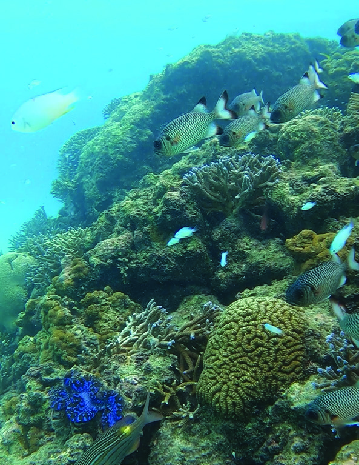
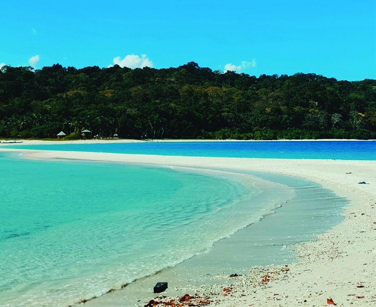

173
തീരങ്ങളിലൂടെ
സ്റ്റാൻഡേർഡ് IX
കോsോറൽ പോോോളിിപ്പുുകൾ (Coral polyps) എന്നറിയപ്പെ�ടുുന്ന
സൂൂക്ഷ്്മ
സമുുദ്രജീീവിികളുുടെെ
മൃതാാവശിിഷ്ടങ്ങൾ
അടിഞ്ഞുുകൂടിയാാണ്് പവിിഴപ്പുുറ്റുുകൾ രൂൂപം കൊsൊള്ളുു
ന്നത്.
കോsോറലുുകളുുടെെ
സ്രവമാായ
കാാൽസ്യം�
കാാർബണേ�റ്റാാണ്്
പവിിഴപ്പുുറ്റുുകൾ
രൂൂപപ്പെ�ടുുന്നതിന്്
സഹാായിക്കുുന്നത്. പവിിഴപ്പുുറ്റുുകൾ രൂൂപപ്പെ�ടുുന്നതിന്്
നൂറുക്കണക്കി
ിന്്
വർഷങ്ങളെ�ടുുക്കുംം�
.
കടൽ
നിരപ്പിനു മുകളിിൽ ഉയർന്നു നിൽക്കുുന്ന പർവതത്തല
പ്പുുകളിിൽ പവിിഴപ്പുുറ്റുുകൾ വളർന്നാാണ്് പവിിഴദ്വീീ�പുകൾ
(Coral Islands) ഉണ്ടാാകുന്നത്. ജീീവനുുള്ള കോsോറൽ
പോോോളിിപ്പുുകൾ ഓറഞ്ച്്, മഞ്ഞ, പച്ച എന്നിങ്ങേ�നെ�
വിിവിിധ വർണ്ണങ്ങളിിൽ കാാണപ്പെ�ടുുന്നു. വിിവിിധയിനം
മത്സ്യയങ്ങളുടെെയുംം� സമുുദ്ര ജീീവിികളുുടെെയുംം� ആവാാസകേsന്ദ്രംം
കൂടിയാാണ്് പവിിഴപ്പുുറ്റുുകൾ.
ഉഷ്ണമേ�ഖലയിിൽ, തീരത്തോ�ോട് ചേxർന്ന് തെ�ളിിഞ്ഞ ജലമുുള്ള, താാരതമ്യേ�േന ആഴം കുറഞ്ഞ
കടലുുകളിിലാാണിവ വളരുുന്നത്. ഇന്ത്യയയിൽ ലക്ഷദ്വീീ�പിനെ� കൂടാാതെ� ഗുുജറാാത്തിലെ� ഗൾഫ്്
ഓഫ്് കച്ച്, തമിിഴ്നാാട്ടിിലെ� ഗൾഫ്് ഓഫ്് മന്നാാർ, ആൻഡമാാൻ നിക്കോ�ോബാാർ ദ്വീീ�പുകൾ
എന്നിവിിടങ്ങളിിലാാണിവ പൊൊതുുവെ� കാാണപ്പെ�ടുുന്നത്.
പവിിഴദ്വീീപുകൾ
ലക്ഷദ്്വവീപിലെ ഒരു പവിഴപ്ുറ്റ്
ആൻഡമാാൻ നിിക്കോÚോബാാർ ദ്വീീപുകൾ
ബംഗാൾ ഉൾക്കടല
ിൽ സ്ഥിതിചെയ്ുന്ന ദ്്വവീപസ
മൂഹമായ ആൻഡമാൻ
നിക്്കകോബാർ ദ്്വവീപ
ുകളുടെ സ്ഥാനം നിങ്ങൾ തിരിച്ചറിഞ്ഞല്്ലോ.
ഇവ അഗ്നിപർവതജ
ന്്യ ദ്്വവീപ
ുകളാണ
്. ഈ ദ്്വവീപസ
മൂഹത്തെ
ആൻഡ
മാാൻ ദ്വീീ�പുകൾ, നിക്കോ�ോബാാർ ദ്വീീ�പുകൾ എന്നിങ്ങനെ� വേ�ർതിരിക്കുുന്ന
കടൽഭാാഗംം 10 ഡിഗ്രിി ചാാനൽ എന്നാാണ്് അറിയപ്പെ�ടുുന്നത്. ഇന്ത്യയയിലെ�
ഏക സജീീവ അഗ്നിപർവതമാാ
യ ബാാരൻ
ദ്വീീ�പ് നിക്കോ�ോബാാർ ദ്വീീ�പസമൂൂഹത്തിൽ ഉൾപ്പെ�
ടുുന്നു. ഏകദേ�ശംം 572 ചെെxറുതുംം� വലുുതുമാായ
ദ്വീീ�പുകളുുള്ളതിിൽ 38 ദ്വീീ�പുകളിിലാാണ്് ജന
വാാസമുുള്ളത്്. മിക്ക ദ്വീീ�പുകളിിലുംം� തദ്ദേŔശീയ
ഗോ�ോത്രജനവിിഭാാഗങ്ങളാാണ്് അധിവസി
ിക്കുുന്നത്.
പോോോർട്ട്ബ്ലെെƗയർ ആണ്് കേsന്ദ്രഭരണ
പ്രദേ�ശ
മാായ ആൻഡമാാൻ നിക്കോ�ോബാാർ ദ്വീീ�പുകളുുടെെ
തലസ്ഥാാനം. ഇന്ത്യയയുടെെ ഏറ്റവുംം� തെ�ക്കേ�
അറ്റമാാ
യ ഇന്ദിിര പോോോയിന്റ്് ഗ്രേ�റ്റ്് നിക്കോ�ോബാാർ
ദ്വീീ�പിലാാണ്്. 2004-ൽ ഉണ്ടാായ സുനാാമിയിൽ
ഈ ഭാാഗംം 4 മീറ്ററോ�
ോളം കടലിിൽ മുങ്ങിപ്പോ�ോയി.
ചിത്രം 8.10
നോ�ോ
ർത്ത്് ആൻഡമാനിലെ റോോോസ്് ഐലൻഡ്്
Page 78
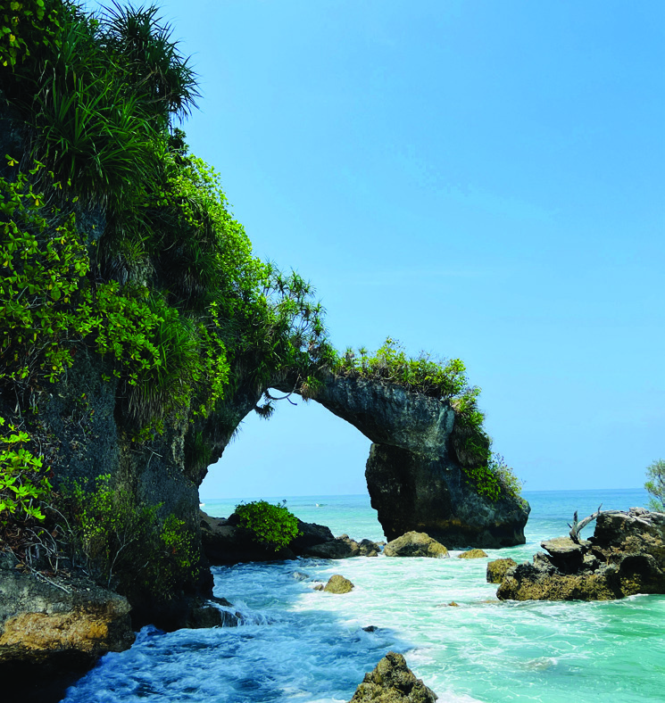


174
ഭാഗം II
സാമൂഹ്്യശാസ്തം II
ചിത്രം 8.12
സമുദ്രകമാനംം - നെയിൽ ദ്്വവീപ്
(നോ�ോർത്് ആൻഡമാൻ)
മണൽബീച്ചുകൾ, പാറക്കെട്ടുുകൾ, സമുുദ്ര കമാ
നങ്ങൾ, ക്ലിഫുുകൾ, വേലിയേറ്റ ചാലുുകൾ
തുുടങ്ങിയവ
ഇവിിടത്്തെ സവിശേഷതകളാണ്.
ആൻഡമാൻ നിക്്കകോബാർ ദ്്വീപുുകളിിൽ ഉയർന്ന
തോ�ോതിിൽ മഴ ലഭിക്കുുന്നതിിനാൽ ഉഷ്ണമേഖലാ
നിത്്യഹരിിതവനങ്ങൾ ധാരാളമായിി വളരുന്നുു.
പവിിിഴപ്പുുറ്റുുുകളും�ം ബീച്ചുുകളും�ം ചുുുണ്ണാാമ്പുുുകൽ
ഗുുുഹകളുുമെെ
ല്ലാാമുുുള്ള
ആൻഡമാാൻ
നിിക്കോ�ോബാർ ദ്വീീ�പുുുകൾ ഒരുുു പ്രധാന വിിനോ�ോദ
സഞ്ചാാരകേ�ന്ദ്രമാണ്.
തീീീരഭൂൂരൂപങ്ങൾ
ഓരോ�ോ ഭൂപ്രദേ�ശങ്ങളിിലുംം� വ്യയത്യയയസ്തമായ ഭൂരൂപ
ങ്ങൾ നമുുക്ക് കാണാനാകുംം�. വിിവിിിധ ഭൂരൂപ
രൂപീകരണ സഹായിിികളാണിിവ നിിിർമ്മിിക്കുുുന്ന
തെ�ന്ന് നിിിങ്ങൾക്കറിിയാമല്ലോ�ോ. കാറ്റ്, ഹിിമാനിിി, നദിിികൾ എന്നിിിങ്ങനെ�യുുുള്ള
വിിവിിിധ ഭൂരൂപരൂപീകരണ സഹായിിികൾ രൂപപ്പെ�ടുുത്തുുുന്ന ഭൂരൂപങ്ങളെ�
നോ�ോർത്് ആൻഡമാൻ
നോ�ോർത്് ആൻഡമാൻ
മിഡിൽ ആൻഡമാൻ
മിഡിൽ ആൻഡമാൻ
ഇന്തത്യ
ഇന്തത്യ
ലോോോവർ ആൻഡമാൻ
ലോോോവർ ആൻഡമാൻ
സെൻഡിനൽ ദ്്വവീപ്
സെൻഡിനൽ ദ്്വവീപ്
10
10 ഡിഗ്ി ചാനൽ
ഡിഗ്ി ചാനൽ
10
10 ഡിഗ്ി ചാനൽ
ഡിഗ്ി ചാനൽ
ആൻഡമാൻ ദ്്വവീപ്
ആൻഡമാൻ ദ്്വവീപ്
ബംംഗാൾ ഉൾക്കടൽ
ബംംഗാൾ ഉൾക്കടൽ
ലിറ്ിൽ ആൻഡമാൻ
ലിറ്ിൽ ആൻഡമാൻ
കാർ നിക്്കകോബാർ
കാർ നിക്്കകോബാർ
നിക്്കകോബാർ ദ്്വവീപുകൾ
നിക്്കകോബാർ ദ്്വവീപുകൾ
ലിറ്ിൽ നിക്്കകോബാർ
ലിറ്ിൽ നിക്്കകോബാർ
ഗ്രേറ്് നിക്്കകോബാർ
ഗ്രേറ്് നിക്്കകോബാർ
ഇന്ിര പോ�ോയിന്്
ഇന്ിര പോ�ോയിന്്
പോ�ോർട്ട്ബ്ലെയർ
പോ�ോർട്ട്ബ്ലെയർ
ചിത്രം 8.11
ആൻഡമാൻ നിക്്കകോബാർ ദ്്വവീപുകൾ
ആൻഡമാൻ നിക്്കകോബാർ ദ്്വവീപുകൾ
Page 79


175
തീരങ്ങളിലൂടെ
സ്റ്റാൻഡേർഡ് IX
ക്ുറിച്ച് മുൻ അധ്യയാായത്ിൽ നാാം ചർച്ച ചെയ്തല്്ലലോ. തീീരപ്രദേശങ്ങളിൽ
തിരമാലകളാാണ്് പ്രധാാന ഭൂൂരൂൂപരൂൂപീീകരണ സഹാായികൾ.
തിരമാലകളുടെ അപരദന, നിക്ഷേപണ പ്രവർത്തനങ്ങൾ വഴി രൂൂപ
പ്പെടുന്ന ഭൂൂരൂൂപങ്ങൾ ഏതെല്ലാമെന്ന്്
നോ�ോക്്കാാംാം.
ചിത്രം (8.13) ശ്രദ്ിക്കൂൂ. സമുദ്രനിരപ്പിൽ നിന്്നുുംും ഉയർന്നുനിൽക്ുന്ന
ചെങ്കുത്താായ കരഭാാഗം കാാണുന്നില്ലേ
? ഇവയാാണ്് ക്ിഫുകൾ. സമുദ്ര
തീീരങ്ങളിലെ പാാറക്കെട്ടുകളിൽ തുടർച്ചയാായി തിരമാലയടിക്കുമ്്പപോൾ
തീീരശിലകൾ അപരദനത്തിലൂടെ നീീക്ം ചെയ്യപ്പെടാാറുണ്ട്. ഇതിന്റെ
ഫലമാായി രൂൂപപ്പെടുന്ന ചെങ്കുത്താായ കരഭാാഗങ്ങളാാണ്് ക്ിഫുകൾ.
ഇതുപോ�ോലെ തിരമാലകളുടെ അപരദനപ്രക്ിയയുടെ ഫലമാായി തീീരശില
കളിൽ ചെറു ദ്്വവാാരങ്ങൾ രൂൂപപ്പെട്ട്് ഇവ കാലക്രമേണ വലുതാായി സമുദ്ര
ഗുഹകളാായി രൂൂപപ്പെടുകയും ചെയ്ുന്നു.
സമുദ്രത്തിലേക്ക്് തള്ളി നിൽക്ുന്ന തീീരശിലാാഭാാഗത്ത്് തിരമാലയുടെ
അപരദനം മൂലം ഇരുവശങ്ങളിൽ നിന്്നുുംും സമുദ്രഗുഹകൾ രൂൂപപ്പെടുന്നു.
കാലക്രമേണ നിരന്തരമാായ അപരദനപ്രക്ിയയിലൂടെ ഇരുഗുഹകളും
കൂടിച്ചേർന്ന്് കമാാന ആകൃതി കൈവരിക്ുന്നു. ഇതാാണ്് സമുദ്രകമാാനം.
സമുദ്രകമാാനങ്ങളുടെ മേൽക്കൂൂരഭാാഗം തുടർ അപരദനത്തിലൂടെ തകരു
മ്്പപോൾ കടലിലേക്ക്് തള്ളിനിൽക്ുന്ന കമാാനഭാാഗം തീീരത്ുനിന്്നുുംും
വേർപെട്ട്് ഒരു തൂൂണുപോ�ോലെ ബാാക്ിയാാവുന്നു. ഇവയാാണ്് സമുദ്ര സ്തംഭ
ങ്ങൾ.
ചിത്രം 8.13
ക്ിഫ്
ക്ിഫ്
സമുദ്രഗുഹ
സമുദ്രഗുഹ
സമുദ്രകമാാനംം
സമുദ്രകമാാനംം
സമുദ്ര സ്തംംഭംം
സമുദ്ര സ്തംംഭംം
Page 80
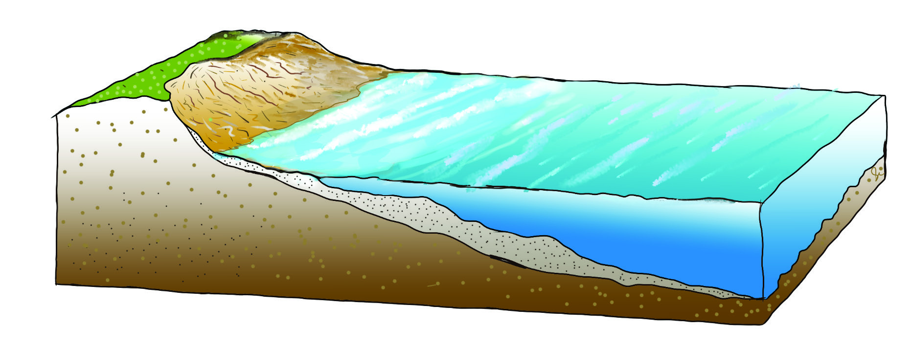


176
ഭാഗം II
സാമൂഹ്്യശാസ്തം II
സമുദ്രകമാാനങ്ങളുടെയും,
സമുദ്രസ്തംഭങ്ങളുടെയും
സവിശേഷതകൾ
ചിത്രം നിരീക്ഷിീക്ഷിച്ച് മനസിലാാക്കൂൂ.
തിരമാലയുടെ പ്രവർത്തനഫലമാായി വിവിധ നിക്ഷേപണഭൂൂരൂൂപങ്ങളും
തീീരപ്രദേശത്ത്് രൂൂപപ്പെടാാറുണ്ട്. അവയേതെല്ലാമെന്ന്്
നമുക്ക്് പരിശോ�ോ
ധിക്്കാാംാം.
വേലിയേറ്റനിരപ്പിനും വേലിയിറക്കനിരപ്പിനും ഇടയിൽ തിരമാലയുടെ
നിക്ഷേപണ പ്രവർത്തനത്താാൽ മണൽ, ചരൽ എന്നിവ അടിഞ്ഞ്്
രൂൂപപ്പെടുന്ന താാൽക്കാലിക നിക്ഷേപമാാണ്് ബീീച്ുകൾ.
ചിത്രം 8.14 a, 8.14 b എന്നിവ നിരീക്ഷിീക്ഷിച്ച് വേലിയേറ്റനിരപ്പ്്, വേലിയിറക്ക
നിരപ്പ്് എന്നിവ തിരിച്ചറിയൂൂ. വേലിയേറ്റനിരപ്പ്് 'A' എന്്നുുംും വേലിയിറക്ക
നിരപ്പ്് 'B' എന്്നുുംും സൂചിപ്പിച്ിരിക്ുന്നു. വേലിയേറ്റ-വേലിയിറക്കനിരപ്പു
കൾക്കിടയിലുള്ള പ്രദേശത്ത്് തിരമാലയുടെ നിക്ഷേപണപ്രക്ിയയിലൂടെ
ബീീച്ുകൾ രൂൂപപ്പെടുന്നു.
വേലിയേറ്റനിരപ്പ്
സമുദ്രനിരപ്പ്
A
ചിത്രം 8.14 a
വേലിയിറക്കനിരപ്പ്
B
സമുദ്രനിരപ്പ്
ബീച്്
ചിത്രം 8.14 b
Page 81


177
തീരങ്ങളിലൂടെ
സ്റ്റാൻഡേർഡ് IX
ചിത്രം 8.15
ലഗൂൺ
പൊ�ൊഴി
പൊ�ൊഴി
മണൽനാക്ക്ാക്ക്
മണൽനാക്ക്ാക്ക്
ബീച്്
ബീച്്
കടൽത്തീീരത്ിന്് സമാന്തരമാായി തിരമാലകളുടെ നിക്ഷേപണ പ്രവർത്തന
ത്താാൽ രൂൂപപ്പെടുന്ന താാൽക്കാലിക മണൽത്തിട്ടകളാാണ്് പൊ�ൊഴികൾ.
കരയിൽ നിന്്നുുംും കടലിലേക്ക്് നീണ്ടുനിൽക്ുന്ന മണൽത്തിട്ടകളാാണ്്
മണൽനാാക്ുകൾ (Spit).
തിരമാലയുടെ പ്രവർത്തനഫലമാായി രൂൂപപ്പെടുന്ന ഭൂൂരൂൂപങ്ങളുടെ ചിത്രങ്ങൾ
വിവരസാങ്കേതികവിദ്്യയുടെ സഹാായത്്തതോടെ കണ്ടെത്ി ഒരു ഡിജിറ്റൽ
ആൽബം തയ്യാാറാാക്കൂൂ.
കാാലാാവസ്ഥ
മറ്റ്് ഭൂൂപ്രകൃതി വിഭാാഗങ്ങളിൽ നിന്്നുുംും വ്യത്യസ്തമാായി സവിശേഷമാായ
കാലാാ
വസ്ഥയാാണ്് തീീരപ്രദേശങ്ങളിൽ അനുഭവപ്പെടുന്നത്്.
ഉഷ്ണമേഖലയിലാാണ്് ഉൾപ്പെടുന്നതെങ്കിലും ഇന്തത്യ്യയുടെ തീീരപ്രദേശങ്ങ
ളിൽ മിതമാായ കാലാാ
വസ്ഥയാാണുള്ളത്്. ഇവിടെ അത്യുഷ്ണമോ�ോ, അതി
ശൈത്യമോ�ോ അനുഭവപ്പെടാാറില്ല. സമുദ്ര സാാമീപ്്യമാാണ്് ഇതിന്് കാാരണം.
കരയുംം� കടലുംം� വ്യയത്യയയസ്തമാായാാണ്്് സൂൂര്യയതാാാപത്തോ�ോട്്് പ്രതികരിക്കുന്നത്്്.
കര പെ�ട്ടെെന്ന്്് ചൂൂടുപിടിക്കുകയുംം� വേ�ഗത്തിൽ തണുക്കുകയുംം� ചെ�യ്യു
മ്്പപോൾ കടൽ സാാവധാാനത്തിലേ ചൂടുപിടിക്ുകയും തണുക്ുകയും
ചെയ്യുന്നുള്ളൂൂ. ഇത്് കടൽക്കാാറ്ും കരക്കാാറ്ും രൂൂപപ്പെടുന്നതിന്് കാാരണ
മാാകുന്നു.
ഈ
കാാറ്ുകൾ
തീീരപ്രദേശത്തെ
ദിനാന്തരീീക്ഷസ്ഥിതി
മിതപ്പെടുത്ുന്നതിൽ മുഖ്യപങ്കുവഹിക്ുന്നു.
Page 82
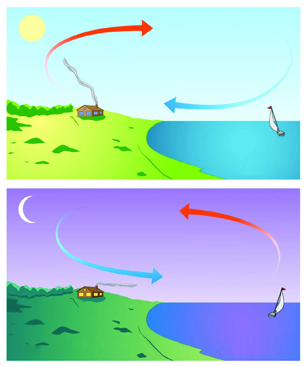


178
ഭാഗം II
സാമൂഹ്്യശാസ്തം II
കടൽക്കാാറ്്റുുംം കരക്കാാറ്്റുുംം
തീീരപ്രദേശങ്ങളിൽ പകൽ സമയങ്ങളിൽ കര വേഗം
ചൂടുപിടിക്ുന്നു. ഇതുമൂലം കരഭാാഗത്തെ വാായു മുകളി
ലേക്ുയരുകയും ന്യയൂനമർദം രൂൂപപ്പെടുകയും ചെയ്ുന്നു.
എന്നാാൽ ഈ സമയം കടലിൽ താാരതമ്്യയേന ചൂട്് കുറവും
ഉച്ചമർദവുമാായിരിക്ും.
അതിനാാൽ
ഉച്ചമർദമുള്ള
കടലിൽ നിന്്നുുംും ന്യയൂനമർദപ്രദേശമാായ കരയിലേക്ക്്
വാായു പ്രവഹിക്ുന്നു. ഇതാാണ്് കടൽക്കാാറ്റ്് (ചിത്രം A).
ഇതിന്് വിപരീീതമാായി രാത്രിാത്രികാലങ്ങളിൽ കരപ്രദേശത്ത്്
ചൂട്് താാരതമ്്യയേന വേഗത്ിൽ കുറയുന്നത്് കാാരണം
ഉച്ചമർദം രൂൂപപ്പെടുന്നു. എന്നാാൽ കടലിൽ കരയേക്കാാൾ
താാരതമ്്യയേന ചൂട്് കൂടുതലാായതിനാാൽ ന്യയൂനമർദവുമാാ
യിരിക്ും. അപ്്പപോൾ ഉച്ചമർദമേ
ഖലയാായ കരയിൽ
നിന്്നുുംും
ന്യയൂനമർദമേ
ഖലയാായ
കടലിലേക്ക്്
കാാറ്റ്്
വീശുന്നു ഇതാാണ്് കരക്കാാറ്റ്് (ചിത്രം B).
ചിത്രം
ചിത്രം A - - കടൽക്കാാറ്്
കടൽക്കാാറ്്
ചിത്രം
ചിത്രം B - - കരക്കാാറ്്
കരക്കാാറ്്
ഉഷ്ണവാായു
ഉഷ്ണവാായു
ഉഷ്ണവാായു
ഉഷ്ണവാായു
തണു്ത
തണു്ത
കടൽക്കാാറ്്
കടൽക്കാാറ്്
തണു്ത
തണു്ത
കരക്കാാറ്്
കരക്കാാറ്്
ചിത്രം 8.16
മൺസൂൂൺകാാറ്ുകളാാണ്് തീീരദേശ കാലാാ
വസ്ഥയെ സ്്വവാധീധീനിക്ുന്ന മറ്്ററൊരു
ഘടകം. തെക്ുപടിഞ്ഞാാറൻ മൺസൂൂൺ കാാറ്ുകളാാണ്് ഇന്തത്യ്യയിലാാകമാാനം മഴ
നൽകുന്നത്് എന്ന്് നിങ്ങൾക്കറിയാാമല്്ലലോ. മൺസൂൂൺകാാറ്ുകൾ ആദ്്യമെത്ു
ന്നത്് ദ്്വവീീപുകളിലും തീീരങ്ങളിലുമാാണ്്. അറബിക്കടലിലൂടെ എത്ുന്ന തെക്ു
പടിഞ്ഞാാറൻ മൺസൂൂൺ കാാറ്ുകൾ പശ്ിമഘട്ടമലനിരകളിൽ തട്ടി പടിഞ്ഞാാ
റൻ തീീരസമതലത്ിൽ ഉയർന്നതോ�ോതിൽ മഴ നൽകുന്നു.
മുൻ അധ്യയാായത്തിലെ ഭൂൂപടം (ചിത്രം 2.17) നിരീക്ഷിീക്ഷിച്ച് തീീരസമതലങ്ങളിൽ
തെക്ുപടിഞ്ഞാാറൻ മൺസൂൂൺകാാറ്ുകളുടെ സഞ്ചാരഗതി തിരിച്ചറിയൂൂ.
തെക്ുപടിഞ്ഞാാറൻ മൺസൂൂൺകാാറ്ുകളിൽ നിന്്നുുംും പടിഞ്ഞാാറൻ തീീരങ്ങളിൽ
ഉയർന്നതോ�ോതിൽ മഴ ലഭിക്ുന്നതിന്് കാാരണമെന്ത്്?
കിഴക്കൻ തീീരങ്ങളിൽ കോ�ോറമാന്റൽ തീീരത്ത്് മഴ ലഭിക്ുന്നത്് ഒക്ടടോബർ-
നവംബർ മാാസങ്ങളിലാാണ്്. മൺസൂൂൺകാാറ്ുകളുടെ പിൻവാാങ്ങൽ കാല
മാാണിത്്. ഈ പിൻവാാങ്ങൽ കാലയളവിൽ കേരളത്തിലും മഴ ലഭിക്കുന്നുണ്ട്്.
നാാം ഇതിനെ തുലാാവർഷമെന്ന്് വിളിക്ുന്നു.
മുൻ അധ്യയാായത്തിലെ ഭൂൂപടം (ചിത്രം 2.18) നിരീക്ഷിീക്ഷിച്ച് വടക്ുകിഴക്കൻ
മൺസൂൂൺകാാറ്ുകളുടെ സഞ്ചാരഗതി തിരിച്ചറിയൂൂ.
ബംഗാാൾ ഉൾക്കടലിൽ രൂൂപപ്പെടുന്ന ചക്രവാാതങ്ങളിൽ നിന്്നുുംും കിഴക്കൻ
തീീരത്ത്് മഴ ലഭിക്കുന്നുണ്ട്്.
വടക്ുകിഴക്കൻ മൺസൂൂൺകാാറ്ുകളിൽ നിന്്നുുംും കോ�ോറമാന്റൽ തീീരങ്ങളിൽ മഴ
ലഭിക്ുന്നു. കാാരണം അന്്വവേഷിച്ചറിയൂൂ.
Page 83


179
തീരങ്ങളിലൂടെ
സ്റ്റാൻഡേർഡ് IX
മണ്്
നദികളുടെയും തിരമാലകളുടെയും നിക്ഷേപണപ്രക്ിയയിലൂടെ രൂൂപ
പ്പെടുന്ന നിക്ഷേപണ മണ്ണാാണ്് തീീരപ്രദേശത്ത്് പൊ�ൊതുവെ കാാണപ്പെ
ടുന്നത്്. മണൽ നിറഞ്ഞ മണ്ും മഞ്ഞയും ചുവപ്പ്് നിറവുമുള്ള ലാറ്ററൈ
റ്റ്്
മണ്ും കറുത്ത കളിമണ്ും ജൈവാാംശം കൂടിയ പീീറ്റ്് മണ്ും പടിഞ്ഞാാറൻ
തീീരങ്ങളിൽ കാാണപ്പെടുന്നു.
കിഴക്കൻ തീീരങ്ങളിൽ കൂടുതലും എക്കൽമണ്ണാാണ്് കാാണപ്പെടുന്നത്്.
ചിലയിടങ്ങളിൽ മണൽ നിറഞ്ഞ ചെങ്കൽമണ്ും കറുത്തമണ്ും കാാണ
പ്പെടുന്നു.
ചുവടെ നൽകിയിട്ടുള്ള പട്ടിക പരിശോ�ോധിച്ച് തീീരപ്രദേശങ്ങളിലെയും
ദ്്വവീീപുകളിലെയും മണ്ിനങ്ങൾ തിരിച്ചറിയൂൂ. അധിക വിവരങ്ങൾകൂടി
ഉൾപ്പെടുത്ി കുറിപ്പ്് തയ്യാാറാാക്ി ക്ലാാസ്്റൂൂമിൽ അവതരിപ്പിക്കൂൂ.
തീരംം
മണ്ിനംം
ഗുജറാാത്ത്് തീീരപ്രദേശം
കറുത്തമണ്ണ്്, തീീരദേശ എക്കൽമണ്ണ്്, ലവണമണ്ണ്്
കൊ�ൊങ്കൺ തീീരപ്രദേശം
കറുത്തമണ്ണ്്, ലാറ്ററൈ
റ്റ്് മണ്ണ്്
മലബാാർ തീീരപ്രദേശം
എക്കൽമണ്ണ്്, പീീറ്റ്് മണ്ണ്്
കിഴക്കൻ തീീരപ്രദേശം
തീീരദേശ എക്കൽ മണ്ണ്്, ഡെ
ൽറ്റാാ എക്കൽമണ്ണ്്
ലക്ഷദ്്വവീീപ്്
പവിഴ മണൽമണ്ണ്്
ആൻഡമാാൻ നിക്്കകോബാാർ ദ്്വവീീപ്്
സമുദ്രജന്യ മണൽമണ്ണ്്, എക്കൽമണ്ണ്്
എന്തുകൊ�ൊണ്ടാാ
ണ്് കിഴക്കൻതീീരങ്ങളിൽ കൂടുതലാായും എക്കൽമണ്ണ്് കാാണ
പ്പെടുന്നത്്?
ഓരോ�ോ തീീരങ്ങളിലും വ്യത്യസ്ത സ്്വഭാാവമുള്ള മണ്ിനങ്ങൾ രൂൂപപ്പെടാാനുള്ള
കാാരണങ്ങൾ അന്്വവേഷിക്കൂൂ.
സസ്്യ്യജാാലങ്ങൾ
ഉഷ്ണമേഖലയിൽ സ്ഥിതി ചെയ്ുന്നതിനാലും സമുദ്രസാാമീപ്്യം മൂലവും
ഇന്തത്യ്യയുടെ തീീരദേശങ്ങളിൽ കാലാാ
വസ്ഥയും ഏറെക്കുറെ സമാാനമാാണ്്.
അതിനാാൽ സസ്യജാലങ്ങളിലും ഏറെ സമാാനതകൾ കാാണാാവുന്നതാാണ്്.
Page 84


180
ഭാഗം II
സാമൂഹ്്യശാസ്തം II
ലവണ ചതുപ്ു
നിലങ്ങളിലെ
സസ്യങ്ങൾ
തീരദേശസസ്യങ്ങൾ
വരണ്ട തീരദേശസസ്യങ്ങൾ
ആർദ്ര തീരദേശസസ്യങ്ങൾ
തീരമണൽ
പരപ്ുകളിലെ
സസ്യങ്ങൾ
കണ്ടൽ
ക്കാടുകൾ
കടൽ
പാായലുകൾ
കടൽ
സസ്യങ്ങൾ
കോ�ോറൽ
സസ്യങ്ങൾ
തീരദേശ
പാാറക്കെട്ുകളിലെ
സസ്യങ്ങൾ
ചിത്രം 8.17
തീരസമതലങ്ങളിലെ മിക്ക പ്രദേശങ്ങളും വ്്യയാപകമാായി കൃഷി ഭൂമികളാായി
മാാറ്റപ്പെട്ിട്ുണ്ട്. അതിനാാൽ സ്വവാാഭാവിക സസ്യജാാലങ്ങളേക്കാാൾ കൂടുത
ലാായി തെങ്ങ്്, വാാഴ, നെല്ല്്, പച്ചക്കറികൾ തുടങ്ങിയ കാാർഷികവിളകൾ
ഇവിടെ കാാണപ്പെടുന്ു.
ചിത്രം 8.18
കണ്ടൽക്കാട് (ധർമ്മടംം, കണ്ണൂർ)
ഉഷ്ണമേഖലാാതീരങ്ങളിൽ സാാധാാരണയാായി വളരുന്ന ലവണ
ജല ചതുപ്പുസസ്യങ്ങളാാണ്് കണ്ടലുകൾ. ഇന്ത്യയിൽ ഏക
ദേശം 380 കിലോ�ോമീറ്ററോ�ോളം തീരപ്രദേശത്ത്് കണ്ടൽക്കാാടു
കളുണ്ട്. പശ്ിമബംഗാാൾ തീരത്തെ ഗംഗാാ ഡൽറ്റാാപ്രദേശമാായ
സുന്ദർബൻ ഇന്ത്യയയിലെ� തന്നെ� ഏറ്റവുംം� വലിിയ കണ്ടൽക്കാാടുു
കളാാണ്്്. കണ്ടലുകൾ വിവിധയിനം മത്സ്യയയങ്ങളുടെെയുംം� മറ്റ്്്
ജലജീവികളുടെെയുംം� പ്രജനന കേ�ന്ദ്രങ്ങളാാണ്്്. കൂടാാതെ�
വിവിധ
ജീവിവർഗങ്ങൾക്ക്്്
ആവാാാസകേ�ന്ദ്രവുമാാണ്്്
കണ്ടൽക്കാാടുുകൾ.
ചുഴലിക്കാാറ്റ്്്,
സുനാാമി
തുടങ്ങിയ
പ്രകൃതി
ദുരന്തങ്ങളിൽ
നിന്നുംം�
കണ്ടലുകൾ
തീര
ദേ�ശത്തെ�യുംം� ജനങ്ങളെ�യുംം� സംരക്ഷിിക്കുന്നു. തീരദേ�ശ
ആവാാാസവ്യയവസ്ഥയുടെെ നിലനിൽപ്പിനെ� സ്വാാ�ധീീനിക്കുന്ന
പ്രധാാാന ഘടകമാാണ്്് കണ്ടലുകൾ. കണ്ടൽക്കാാടുുകളുടെെ
സംരക്ഷണത്തിനാായി ജൂലൈൈ 26 അന്താാരാാാ
ഷ്ട്ര കണ്ടൽദിന
മാായി ആചരിക്കുന്നു.
കണ്ടൽക്കാടുകൾ - തീരത്തിന്റെ ശ്വവാാസകോ�ോശംം
ധാാതു നിക്ഷേപംം
ഇന്ത്യയയുടെെ
തീീരദേ�ശങ്ങളിിൽ
വ്യാാ�വസാായി
ിക
മൂല്യയമുുള്ള
ധാാരാാളംം ലോ�ോഹ - അലോ�ോഹ ധാാതുക്കളുടെെ നിിക്ഷേ�പമുണ്ട്്.
ഇരുമ്പയിര്്്,
മാംDZഗനീസ്്്,
ബോ�ോക്്സൈൈറ്റ്്്
തുടങ്ങിയവയാാണ്്്
തീര
ദേശത്ത്് കാാണപ്പെടുന്ന പ്രധാാന ധാാതുക്കൾ. കൂടാതെ ആണവ ഇന്ധനമാായ
യുറേനിയം വേർതിരിച്ചെടുക്കാവ
ുന്ന മോ�ോണോ�ോസൈറ്റ്് പോ�ോലുള്ള അപൂർവ
ചുവടെ
നൽകിയിട്ുള്ള ഫ്ല
ലോചാാർട്ട് പരിശോ�ോധിച്ച്് തീരദേശങ്ങളിലെ പ്രധാാന സസ്യജാാലങ്ങൾ
ഏതെല്ലാമെന്ന്് തിരിച്ചറിയൂ.
Page 85


181
തീരങ്ങളിലൂടെ
സ്റ്റാൻഡേർഡ് IX
സാാമ്പ്തിക പ്രവർ്തനങ്ങൾ
കൃഷി, മത്സ്യബന്ധനം എന്നിവയാാണ്് തീീരദേശ ജനതയുടെ പ്രധാാന
സാാമ്പത്ിക പ്രവർത്തനങ്ങൾ. കൂടാതെ
വിവിധ ധാാതു അധിഷ്ഠിത
വ്യവസാായങ്ങൾ, കപ്പൽ നിർമ്മാാണം, മത്സ്യസം്കരണം, ഉപ്പ്് നിർമ്മാാണം
തുടങ്ങിങ്ങിയ വ്യവസാായങ്ങളും തീീരദേശത്തുണ്ട്്. തീീരദേശങ്ങളിൽ ഏറെ
സാധ്്യതകളുള്ളതും അനുദിനം വികസിച്ചുകൊ�ൊണ്ടിരിക്ുന്നതുമാായ ഒരു
പ്രധാാന തൊ�ൊഴിൽ മേഖലയാാണ്് വിനോ�ോദസഞ്ചാരം.
തീീരദേശത്തെ
വ്യവസാായ പുരോ�ോഗതിയ്ക്ക് തുറമുഖങ്ങളുടെ പങ്ക്് വളരെ
പ്രധാാനമാാണ്്. വ്യയാാവസാായിക ഉല്പന്നങ്ങളും അസംസ്കൃത വസ്തുക്കളും
കയറ്ുമതി ചെയ്ുന്നതും ഇറക്ുമതി ചെയ്ുന്നതും തുറമുഖങ്ങൾ വഴി
യാാണ്്.
ആൻഡമാാൻ നിക്്കകോബാാർ ദ്്വവീീപുകളിൽ ജനസാാന്ദ്രത കുറവാാണ്്. കാാരണ
മെന്ത്്?
ധാാതുക്കളും തീീരദേശ കരിമണലിൽ കാാണപ്പെടുന്നു. കൊ�ൊല്ലം ജില്ലയിലെ
ചവറയിലും ഒഡിഷയിലെയും തമിഴ്്നാട്ടിലെ
യും ചില തീീരങ്ങളിലും
ഇത്തരം കരിമണൽ നിക്ഷേപമുണ്ട്.
ജനസംംഖ്്യ്യയുംം ജനജീവിതവുംം
ജനസംഖ്യയാാവിതരണത്തെ സ്്വവാധീധീനിക്ുന്ന ഘടകങ്ങളിൽ മിക്കതും അനു
കൂലമാായതിനാാൽ ഇന്തത്യ്യൻ തീീരദേശം ജനനിബിഡവും ജനസാാന്ദ്രവുമാാണ്്.
മിതമാായ കാലാാ
വസ്ഥ, കൃഷിക്ും ഗതാാഗതവികസനത്ിനും അനുയോ�ോജ്യ
മാായ സമതല ഭൂൂപ്രകൃതി, കൃഷി, മത്സ്യബന്ധനം, ടൂൂറിസം തുടങ്ങിങ്ങിയ
തൊ�ൊഴിൽ സാധ്്യതകൾ, ജലലഭ്്യത, ധാാതുനിക്ഷേപം, വ്യവസാായം
എന്നിങ്ങനെയുള്ള ഘടകങ്ങൾ തീീരസമതലങ്ങളെ ജനനിബിഡമാാക്ുന്നു.
ഇന്തത്യ്യയിലെ മെട്്രരോ നഗരങ്ങളിൽ ഡൽഹി ഒഴികെ മറ്റ്് മൂന്്നുുംും (മുംബൈ,
ചെന്നൈ, കൊ�ൊൽക്കത്ത) തീീരസമതലങ്ങളിലാാണ്് വികസിച്ു വന്നിട്ടുള്ളത്്.
ദേശീീ
യ ശരാശരിയേക്കാാൾ കൂടിയ ജനസാാന്ദ്രതയുള്ള പ്രദേശമാാണ്് ലക്ഷ
ദ്്വവീീപ്്. എന്നാാൽ ആൻഡമാാൻ നിക്്കകോബാാർ ദ്്വവീീപുകളിൽ ജനസാാന്ദ്രത
കുറവാാണ്്.
Page 86


182
ഭാഗം II
സാമൂഹ്്യശാസ്തം II
തീരദേശങ്ങൾ നേരിടുന്ന വെല്ുവിളികൾ
മനുഷ്യവാാസത്ിന്് അനുയോ�ോജ്യമാായ ഭൂൂപ്രകൃതി, സുഖകരമാായ കാലാാ
വസ്ഥ, ജലലഭ്്യത, കൃഷി, വ്യവസാായം തുടങ്ങിങ്ങി നിരവധി സാധ്്യതകളുള്ള
ഭൂൂപ്രദേശമാാണ്് തീീരദേശം. ഏറെ അനുകൂല സാാഹചര്യങ്ങൾ നില
നിൽക്കുമ്്പപോഴും തീീരദേശവും തീീരദേശ ജനജീീവിതവും നിരവധി വെല്ലു
വിളികൾ നേരിടുന്നുണ്ട്. സുനാാമി, കൊ�ൊടുങ്കാാറ്റ്് തുടങ്ങിങ്ങിയ കടൽ സംബന്ധ
മാായ പ്രകൃതി ദുരന്തങ്ങളും ആഗോ�ോള കാലാാ
വസ്ഥാാമാറ്റത്തിന്റെ ഫലമാായി
സമുദ്ര ജലനിരപ്പ്് ഉയരുന്നതും കടൽക്്ഷഷോഭവും തീീരം കടലെടുക്ുന്ന
തുമെല്്ലാാംാം തീീരദേശ ജനജീീവിതം പ്രതിസന്ധികൾ നിറഞ്ഞതാാക്ുന്നു.
പ്രകൃതിയുടെ ഇത്തരം പ്രതികൂല സാാഹചര്യങ്ങളോ�ോട്് പൊ�ൊരുത്തപ്പെട്ട്്
തങ്ങളുടെ സാാമൂഹ്്യ ജീീവിതം ചിട്ടപ്പെട
ുത്ുന്നതിന്് തീീരദേശ ജനത
നിരന്തരം പരിശ്രമിച്ചുകൊ�ൊണ്ടിരിക്ുകയാാണ്്.
കാലാാ
വസ്ഥാവ്
്യതിയാാനവുമാായി ബന്ധപ്പെട്ട്് തീീരദേശങ്ങളിൽ വരുന്ന
മാറ്റങ്ങളും പ്രകൃതി ദുരന്തസാധ്്യതകളും കൃത്യമാായി നിരീക്ഷിക്കേണ്ടതുണ്ട്.
ഇതിനാായി ആധുനിക ശാാസ്ത്രസാങ്കേതികവിദ്്യകൾ പ്രയോ�ോജനപ്പെടുത്ി
വേണ്ട മുന്നറിയിപ്്പുുംും മുന്്നനൊരുക്കങ്ങളും തീീരദേശ ജനങ്ങളുടെ പങ്കാാളിത്ത
ത്്തതോടെ സമയബന്ധിതമാായി നടപ്പിലാക്കേണ്ടതുമുണ്ട്. തീീരദേശത്തെ
വിഭവങ്ങൾ സുസ്ഥിരമാായി വിനിയോ�ോഗിക്ുന്നതിനും അതിന്റെ പ്രയോ�ോ
ജനം തദ്ദേശീീയ ജനതയ്ക്ക് ലഭിക്ുന്നതിനും ഉതകുംവിധമുള്ള വിഭവ
ആസൂൂത്രണവും സംരക്ഷണവും അനിവാര്്യമാാണ്്. ഇത്തരം പ്രവർത്തന
ങ്ങൾക്കാായി നാാം ഓരോ�ോരുത്തരും കൈകോ�ോർക്കുമ്്പപോഴാാണ്് സുസ്ഥിര
വികസനം സാധ്്യമാാകുന്നത്്.
തുടർപ്രവർ്തനങ്ങൾ
1. തീീരപ്രദേശത്തേ
ക്ക്് ഒരു പഠനയാാത്ര സംഘടിപ്പിച്ച് തീീരഭൂൂപ്രകൃതി പ്രത്്യയേ
കതകൾ ഏതെല്്ലാാംാം രീീതിയിൽ ജനജീീവിതത്തെ സ്്വവാധീധീനിക്ുന്നു
എന്ന്് അന്്വവേഷിച്ചറിയൂൂ. വിവരശേഖരണത്ിനാാവശ്യമാായ ചോ�ോദ്്യയാാവലി
തയ്യാാറാാക്കൂൂ.
2. ഇന്തത്യ്യയിലെ എല്ലാ തീീരദേശ മേഖലകളിൽ നിന്്നുുംും വിവിധ ഭൂൂരൂൂപങ്ങളുടെ
ചിത്രങ്ങൾ വിവരസാങ്കേതികവിദ്്യ പ്രയോ�ോജനപ്പെടുത്ി ശേഖരിക്കൂൂ.
ഇവ ചേർത്ത്് ഒരു ഡിജിറ്റൽ ആൽബം തയ്യാാറാാക്കൂൂ.
Page 87
ഭാാരതത്തിന്റെ ഭരണഘടന
ഭാാഗം IV ക
മൗലിക കർത്തവ്്യ്യങ്ങൾ
51 ക. മൗലിക കർത്തവ്്യ്യങ്ങൾ - താഴെപ്പറയുന്നവ ഭാാരതത്തിലെ ഓരോ�ോ പൗരന്റെയുംം
കർത്തവ്്യയംം ആയിരിക്കുന്നതാാണ് :
(ക) ഭരണഘടനയെ അനുസരിക്ുകയും അതിന്റെ ആദർശങ്ങളെയും സ്ഥാാപനങ്ങ
ളെയും ദേശീീ
യപതാാകയെയും ദേശീീ
യഗാാനത്തെയും ആദരിക്ുകയും ചെയ്ുക;
(ഖ) സ്്വവാാതന്ത്്ര്യ്യത്ിനുവേണ്ടിയുള്ള നമ്മുടെ ദേശീീ
യസമരത്ിന്് പ്രചോ�ോദനം നൽകിയ
മഹനീീയാദർശങ്ങളെ പരിപോ�ോഷിപ്പിക്ുകയും പിൻതുടരുകയും ചെയ്ുക;
(ഗ) ഭാാരതത്തിന്റെ പരമാധികാാരവും ഐക്യവും അഖണ്ഡതയും നിലനിർത്ുകയും
സംരക്ഷിക്ുകയും ചെയ്ുക;
(ഘ) രാജ്്യത്തെ കാാത്ുസൂക്ഷിൂക്ഷിക്ുകയും ദേശീീ
യസേവനം അനുഷ്ഠിക്ുവാാൻ ആവശ്യ
പ്പെടുമ്്പപോൾ അനുഷ്ഠിക്ുകയും ചെയ്ുക;
(ങ) മതപരവും ഭാാഷാാപരവും പ്രാദേശ
ികവും വിഭാാഗീീയവുമാായ വൈവിധ്യങ്ങൾക്കതീീ
തമാായി ഭാാരതത്തിലെ എല്ലാ ജനങ്ങൾക്ുമിടയിൽ, സൗഹാാർദവും പൊ�ൊതുവാായ
സാഹോ�ോദര്്യമനോ�ോഭാാവവും പുലർത്ുക, സ്ത്രീീകളുടെ അന്തസ്ിന്് കുറവു വരുത്ുന്ന
ആചാചാരങ്ങൾ പരിത്യജിക്ുക;
(ച) നമ്മുടെ സമ്ിശ്രസംസ്കാാരത്തിന്റെ സമ്പന്നമാായ പാാരമ്പര്യത്തെ വിലമതിക്ുകയും
നിലനിറുത്ുകയും ചെയ്ുക;
(ഛ) വനങ്ങളും തടാാകങ്ങളും നദികളും വന്യജീീവികളും ഉൾപ്പെടുന്ന പ്രകൃത്യയാാ ഉള്ള
പരിസ്ഥിതി
സംരക്ഷിക്ുകയും
അഭിവൃദ്ധിപ്പെടുത്ുകയും,
ജീീവികളോ�ോട്്
കാാരുണ്യം കാാണിക്ുകയും ചെയ്ുക;
(ജ) ശാസ്ത്രീീയമാായ കാാഴ്ചപ്പാടും മാാനവികതയും, അന്്വവേഷണത്ിനും പരിഷ്്കരണ
ത്ിനും ഉള്ള മനോ�ോഭാാവവും വികസിപ്പിക്ുക;
(ഝ) പൊ�ൊതുസ്്വത്ത്് പരിരക്ഷിക്ുകയും ശപഥം ചെയ്ത്് അക്രമം ഉപേക്ഷിക്ഷിക്ുകയും
ചെയ്ുക;
(ഞ) രാഷ്ട്രംാഷ്ട്രം യത്നത്തിന്റെയും ലക്ഷഷ്യപ്രാാപ്ിയുടെയും ഉന്നതതലങ്ങളിലേക്ക്് നിരന്തരം
ഉയരത്തക്കവണ്ം വ്യക്ിപരവും കൂട്ടാായതുമാായ പ്രവർത്തനത്തിന്റെ എല്ലാ
മണ്ഡലങ്ങളിലും ഉൽക്കൃഷ്ടതയ്ക്കുവേണ്ടി
ി അധ്്വവാാനിക്ുക;
(ട)
ആറിനും പതിനാലിനും ഇടയ്ക്ക്് പ്രാായമുള്ള തന്റെ കുട്ടിക്്കകോ തന്റെ സംരക്ഷണ
യിലുള്ള കുട്ടികൾക്്കകോ, അതതു സംഗതി പോ�ോലെ, മാാതാാപിതാക്കളോ�ോ രക്ഷാാകർ
ത്താവോ�ോ വിദ്്യയാഭ്യയാാസത്ിനുള്ള അവസരങ്ങൾ ഏർപ്പെടുത്ുക.
Page 88
MAP NOT TO SCALE